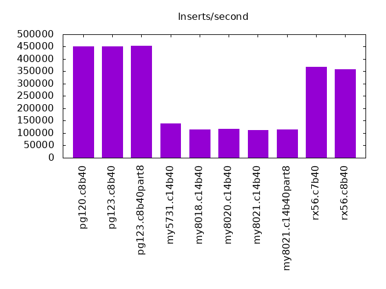
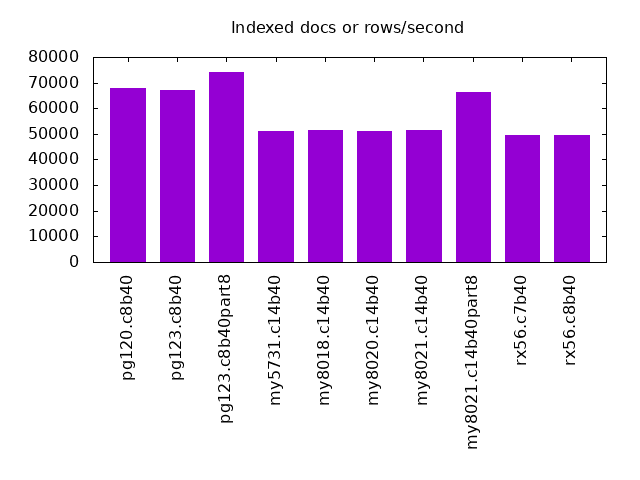
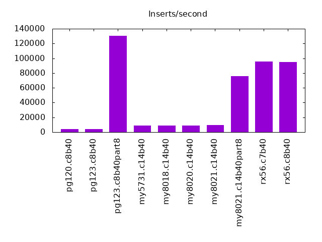
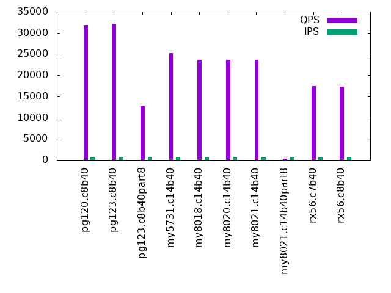
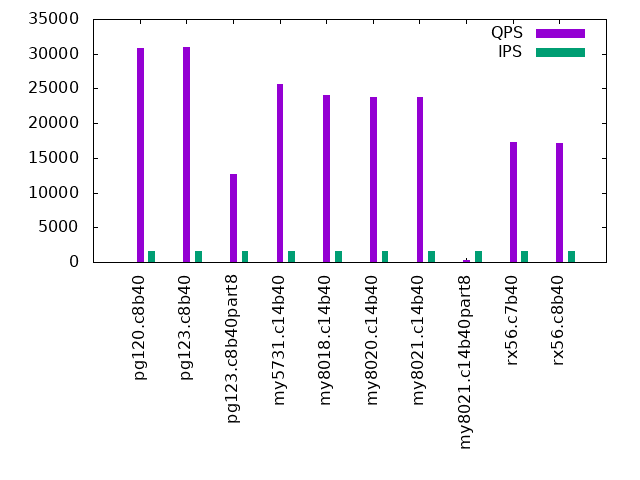
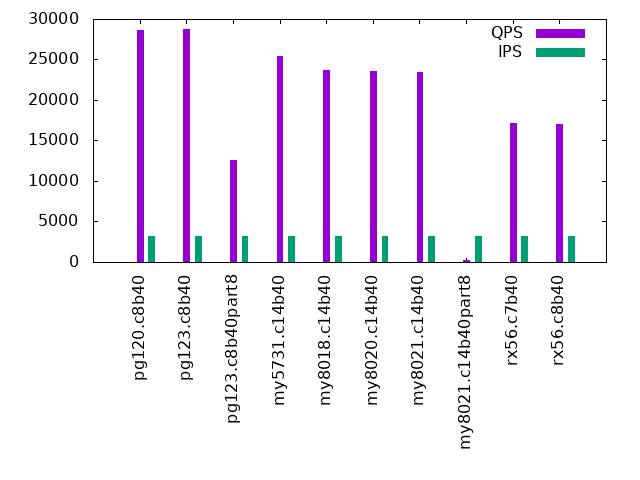
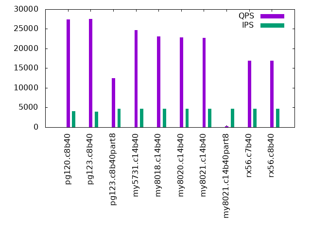
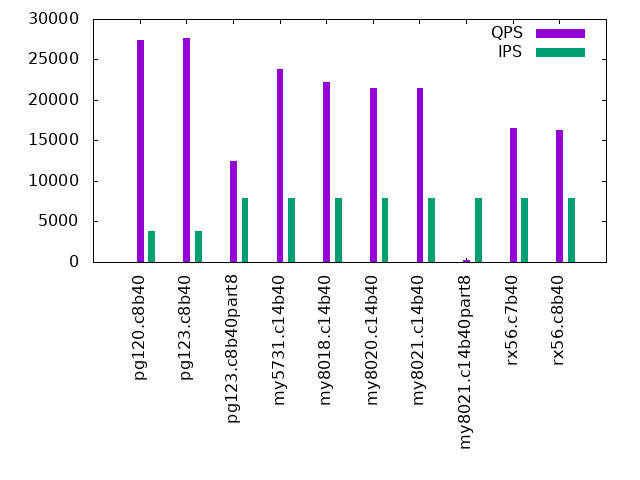

This is a report for the insert benchmark with 2000M docs and 8 clients. It is generated by scripts (bash, awk, sed) and Tufte might not be impressed. An overview of the insert benchmark is here and a short update is here. Below, by DBMS, I mean DBMS+version.config. An example is my8020.c10b40 where my means MySQL, 8020 is version 8.0.20 and c10b40 is the name for the configuration file. All configurations are stored here.
The test server is a c3.8xlarge host with 20,000 EBS PIOPs, 60G RAM and 16 CPU cores (HT disabled). Clients and the DBMS share one server.
The tested DBMS are:
The numbers are inserts/s for l.i0 and l.i1, indexed docs (or rows) /s for l.x and queries/s for q*.2. The values are the average rate over the entire test for inserts (IPS) and queries (QPS). The range of values for IPS and QPS is split into 3 parts: bottom 25%, middle 50%, top 25%. Values in the bottom 25% have a red background, values in the top 25% have a green background and values in the middle have no color. A gray background is used for values that can be ignored because the DBMS did not sustain the target insert rate. Red backgrounds are not used when the minimum value is within 80% of the max value.
| dbms | l.i0 | l.x | l.i1 | q100.2 | q200.2 | q400.2 | q600.2 | q800.2 | q1000.2 |
|---|---|---|---|---|---|---|---|---|---|
| pg120.c8b40 | 450045 | 68095 | 4142 | 31828 | 30816 | 28609 | 27436 | 27472 | 27430 |
| pg123.c8b40 | 450450 | 67192 | 4344 | 32060 | 31017 | 28720 | 27524 | 27438 | 27603 |
| pg123.c8b40part8 | 453515 | 74009 | 130506 | 12652 | 12659 | 12600 | 12524 | 12441 | 12416 |
| my5731.c14b40 | 138494 | 51136 | 8719 | 25253 | 25679 | 25411 | 24700 | 24202 | 23807 |
| my8018.c14b40 | 114929 | 51696 | 8678 | 23690 | 23998 | 23703 | 23137 | 22594 | 22244 |
| my8020.c14b40 | 116952 | 50933 | 9182 | 23664 | 23760 | 23605 | 22814 | 22212 | 21527 |
| my8021.c14b40 | 112797 | 51525 | 9241 | 23645 | 23825 | 23501 | 22769 | 22141 | 21476 |
| my8021.c14b40part8 | 115168 | 66389 | 76046 | 270 | 259 | 237 | 226 | 225 | 223 |
| rx56.c7b40 | 368868 | 49718 | 95352 | 17404 | 17287 | 17099 | 16921 | 16744 | 16522 |
| rx56.c8b40 | 357910 | 49460 | 94787 | 17328 | 17173 | 17065 | 16894 | 16668 | 16348 |
This lists the average rate of inserts/s for the tests that do inserts concurrent with queries. For such tests the query rate is listed in the table above. The read+write tests are setup so that the insert rate should match the target rate every second. Cells that are not at least 95% of the target have a red background to indicate a failure to satisfy the target.
| dbms | q100.2 | q200.2 | q400.2 | q600.2 | q800.2 | q1000.2 |
|---|---|---|---|---|---|---|
| pg120.c8b40 | 790 | 1579 | 3160 | 4030 | 4049 | 3855 |
| pg123.c8b40 | 789 | 1579 | 3158 | 3933 | 4053 | 3821 |
| pg123.c8b40part8 | 790 | 1580 | 3160 | 4739 | 6319 | 7899 |
| my5731.c14b40 | 790 | 1580 | 3160 | 4739 | 6316 | 7882 |
| my8018.c14b40 | 790 | 1579 | 3160 | 4732 | 6319 | 7886 |
| my8020.c14b40 | 790 | 1579 | 3160 | 4734 | 6319 | 7852 |
| my8021.c14b40 | 790 | 1580 | 3160 | 4726 | 6319 | 7856 |
| my8021.c14b40part8 | 789 | 1579 | 3156 | 4729 | 6312 | 7895 |
| rx56.c7b40 | 790 | 1579 | 3160 | 4739 | 6319 | 7899 |
| rx56.c8b40 | 790 | 1580 | 3160 | 4739 | 6319 | 7899 |
| target | 800 | 1600 | 3200 | 4800 | 6400 | 8000 |
l.i0: load without secondary indexes. Graphs for performance per 1-second interval are here.
Average throughput:
Insert response time histogram: each cell has the percentage of responses that take <= the time in the header and max is the max response time in seconds. For the max column values in the top 25% of the range have a red background and in the bottom 25% of the range have a green background. The red background is not used when the min value is within 80% of the max value.
| dbms | 256us | 1ms | 4ms | 16ms | 64ms | 256ms | 1s | 4s | 16s | gt | max |
|---|---|---|---|---|---|---|---|---|---|---|---|
| pg120.c8b40 | 98.270 | 1.714 | 0.012 | 0.004 | 0.550 | ||||||
| pg123.c8b40 | 98.211 | 1.774 | 0.011 | 0.004 | 0.253 | ||||||
| pg123.c8b40part8 | 98.279 | 1.704 | 0.012 | 0.004 | 0.587 | ||||||
| my5731.c14b40 | 4.677 | 92.932 | 2.246 | 0.123 | 0.021 | 0.406 | |||||
| my8018.c14b40 | 1.167 | 96.581 | 2.194 | 0.047 | 0.011 | 0.437 | |||||
| my8020.c14b40 | 1.024 | 96.782 | 2.156 | 0.025 | 0.013 | 0.450 | |||||
| my8021.c14b40 | 0.651 | 97.150 | 2.155 | 0.029 | 0.016 | 0.581 | |||||
| my8021.c14b40part8 | 0.531 | 97.281 | 2.143 | 0.044 | 0.001 | 0.408 | |||||
| rx56.c7b40 | 98.743 | 1.226 | 0.002 | 0.016 | 0.013 | 0.451 | |||||
| rx56.c8b40 | 98.391 | 1.578 | 0.002 | 0.014 | 0.015 | 0.421 |
Performance metrics for the DBMS listed above. Some are normalized by throughput, others are not. Legend for results is here.
ips qps rps rkbps wkbps rpq rkbpq wkbpi csps cpups cspq cpupq dbgb1 dbgb2 rss maxop p50 p99 tag 450045 0 50 403 191382 0.000 0.001 0.425 38610 82.4 0.086 29 215.1 255.2 0.0 0.550 57935 38354 pg120.c8b40 450450 0 50 405 191452 0.000 0.001 0.425 39217 82.1 0.087 29 215.2 255.2 0.0 0.253 57864 38154 pg123.c8b40 453515 0 0 1 192618 0.000 0.000 0.425 39303 82.3 0.087 29 215.2 255.2 0.0 0.587 58135 38854 pg123.c8b40part8 138494 0 0 1 71309 0.000 0.000 0.515 96503 40.1 0.697 46 209.6 243.1 43.4 0.406 17680 12586 my5731.c14b40 114929 0 0 1 59854 0.000 0.000 0.521 137863 43.6 1.200 61 208.5 242.1 43.6 0.437 14486 10893 my8018.c14b40 116952 0 0 1 60462 0.000 0.000 0.517 111308 44.7 0.952 61 208.2 241.8 43.6 0.450 14783 10988 my8020.c14b40 112797 0 0 1 58210 0.000 0.000 0.516 111058 44.6 0.985 63 207.4 241.0 43.5 0.581 14284 10588 my8021.c14b40 115168 0 0 1 59284 0.000 0.000 0.515 109384 45.5 0.950 63 207.1 240.7 43.6 0.408 14484 11587 my8021.c14b40part8 368868 0 0 0 79566 0.000 0.000 0.216 36793 76.1 0.100 33 97.1 98.5 4.2 0.451 47846 31064 rx56.c7b40 357910 0 0 0 87407 0.000 0.000 0.244 35906 76.0 0.100 34 47.7 49.0 4.6 0.421 45949 30965 rx56.c8b40
l.x: create secondary indexes.
Average throughput:
Performance metrics for the DBMS listed above. Some are normalized by throughput, others are not. Legend for results is here.
ips qps rps rkbps wkbps rpq rkbpq wkbpi csps cpups cspq cpupq dbgb1 dbgb2 rss maxop p50 p99 tag 68095 0 1197 19074 23363 0.018 0.280 0.343 2000 3.6 0.029 8 391.4 430.4 0.0 0.006 NA NA pg120.c8b40 67192 0 1180 18826 23044 0.018 0.280 0.343 1993 3.6 0.030 9 391.5 430.1 0.0 0.005 NA NA pg123.c8b40 74009 0 1346 17936 24407 0.018 0.242 0.330 2224 3.7 0.030 8 391.4 431.5 0.0 0.006 NA NA pg123.c8b40part8 51136 0 533 38829 50710 0.010 0.759 0.992 4786 2.4 0.094 8 372.2 405.7 44.0 0.017 NA NA my5731.c14b40 51696 0 562 42228 51267 0.011 0.817 0.992 3047 2.9 0.059 9 370.6 404.1 44.2 0.016 NA NA my8018.c14b40 50933 0 551 41302 50520 0.011 0.811 0.992 3329 2.8 0.065 9 370.3 403.8 44.1 0.033 NA NA my8020.c14b40 51525 0 557 41879 51090 0.011 0.813 0.992 3444 2.9 0.067 9 369.4 403.0 44.1 0.017 NA NA my8021.c14b40 66389 0 605 33536 54794 0.009 0.505 0.825 4421 3.1 0.067 7 369.1 402.7 44.0 0.049 NA NA my8021.c14b40part8 49718 0 635 12900 8682 0.013 0.259 0.175 1372 3.6 0.028 12 209.8 211.1 43.1 0.003 NA NA rx56.c7b40 49460 0 533 9380 6790 0.011 0.190 0.137 1243 3.9 0.025 13 89.4 90.8 43.6 0.003 NA NA rx56.c8b40
l.i1: continue load after secondary indexes created. Graphs for performance per 1-second interval are here.
Average throughput:
Insert response time histogram: each cell has the percentage of responses that take <= the time in the header and max is the max response time in seconds. For the max column values in the top 25% of the range have a red background and in the bottom 25% of the range have a green background. The red background is not used when the min value is within 80% of the max value.
| dbms | 256us | 1ms | 4ms | 16ms | 64ms | 256ms | 1s | 4s | 16s | gt | max |
|---|---|---|---|---|---|---|---|---|---|---|---|
| pg120.c8b40 | 5.052 | 94.440 | 0.508 | 0.917 | |||||||
| pg123.c8b40 | 7.316 | 92.392 | 0.293 | 0.827 | |||||||
| pg123.c8b40part8 | 92.875 | 5.838 | 1.073 | 0.211 | 0.003 | 0.813 | |||||
| my5731.c14b40 | 0.580 | 67.516 | 20.349 | 6.130 | 5.372 | 0.052 | 3.398 | ||||
| my8018.c14b40 | 0.025 | 67.622 | 20.809 | 6.123 | 5.371 | 0.051 | 3.362 | ||||
| my8020.c14b40 | 0.009 | 69.456 | 19.622 | 5.739 | 5.127 | 0.048 | 2.594 | ||||
| my8021.c14b40 | 0.001 | 69.658 | 19.434 | 5.743 | 5.126 | 0.038 | 4.252 | ||||
| my8021.c14b40part8 | 17.348 | 80.144 | 2.267 | 0.236 | 0.004 | 0.950 | |||||
| rx56.c7b40 | 48.779 | 51.182 | 0.025 | 0.002 | 0.013 | 0.308 | |||||
| rx56.c8b40 | 47.919 | 52.033 | 0.033 | 0.014 | 0.481 |
Performance metrics for the DBMS listed above. Some are normalized by throughput, others are not. Legend for results is here.
ips qps rps rkbps wkbps rpq rkbpq wkbpi csps cpups cspq cpupq dbgb1 dbgb2 rss maxop p50 p99 tag 4142 0 5278 42685 100469 1.274 10.304 24.253 13158 10.4 3.176 402 405.7 445.7 0.0 0.917 549 250 pg120.c8b40 4344 0 5538 44628 105406 1.275 10.272 24.262 13759 10.7 3.167 394 405.7 445.7 0.0 0.827 549 250 pg123.c8b40 130506 0 1010 8807 162403 0.008 0.067 1.244 31669 54.9 0.243 67 410.8 450.9 0.0 0.813 21687 300 pg123.c8b40part8 8719 0 2439 39024 129880 0.280 4.476 14.896 25254 7.8 2.896 143 491.4 541.9 44.0 3.398 150 50 my5731.c14b40 8678 0 2434 38945 129399 0.280 4.488 14.912 41791 9.0 4.816 166 489.3 539.8 44.2 3.362 150 50 my8018.c14b40 9182 0 2570 41120 137237 0.280 4.479 14.947 44966 9.6 4.897 167 489.1 539.5 44.2 2.594 150 50 my8020.c14b40 9241 0 2588 41399 138275 0.280 4.480 14.963 44650 9.9 4.832 171 488.2 538.7 44.1 4.252 150 50 my8021.c14b40 76046 0 45 716 152376 0.001 0.009 2.004 63983 48.9 0.841 103 390.6 424.1 44.0 0.950 10434 250 my8021.c14b40part8 95352 0 20 157 93054 0.000 0.002 0.976 30900 42.1 0.324 71 219.3 222.9 42.2 0.308 11987 8241 rx56.c7b40 94787 0 28 452 96593 0.000 0.005 1.019 30487 42.5 0.322 72 97.0 100.6 42.1 0.481 11986 8291 rx56.c8b40
q100.2: range queries with 100 insert/s per client, 2nd loop. Graphs for performance per 1-second interval are here.
Average throughput:
Query response time histogram: each cell has the percentage of responses that take <= the time in the header and max is the max response time in seconds. For max values in the top 25% of the range have a red background and in the bottom 25% of the range have a green background. The red background is not used when the min value is within 80% of the max value.
| dbms | 256us | 1ms | 4ms | 16ms | 64ms | 256ms | 1s | 4s | 16s | gt | max |
|---|---|---|---|---|---|---|---|---|---|---|---|
| pg120.c8b40 | 95.336 | 4.587 | 0.075 | 0.002 | 0.023 | ||||||
| pg123.c8b40 | 95.669 | 4.256 | 0.074 | 0.001 | 0.027 | ||||||
| pg123.c8b40part8 | 99.876 | 0.118 | 0.006 | 0.029 | |||||||
| my5731.c14b40 | 5.967 | 94.005 | 0.027 | 0.219 | |||||||
| my8018.c14b40 | 0.022 | 99.940 | 0.037 | 0.372 | |||||||
| my8020.c14b40 | 0.022 | 99.947 | 0.031 | 0.001 | 0.156 | ||||||
| my8021.c14b40 | 0.023 | 99.938 | 0.038 | 0.001 | 0.279 | ||||||
| my8021.c14b40part8 | 45.701 | 0.472 | 1.851 | 37.019 | 14.764 | 0.172 | 0.021 | 2.166 | |||
| rx56.c7b40 | 99.987 | 0.013 | 0.055 | ||||||||
| rx56.c8b40 | 99.984 | 0.016 | 0.036 |
Insert response time histogram: each cell has the percentage of responses that take <= the time in the header and max is the max response time in seconds. For max values in the top 25% of the range have a red background and in the bottom 25% of the range have a green background. The red background is not used when the min value is within 80% of the max value.
| dbms | 256us | 1ms | 4ms | 16ms | 64ms | 256ms | 1s | 4s | 16s | gt | max |
|---|---|---|---|---|---|---|---|---|---|---|---|
| pg120.c8b40 | 2.528 | 96.448 | 1.024 | 0.917 | |||||||
| pg123.c8b40 | 3.615 | 95.507 | 0.878 | 0.750 | |||||||
| pg123.c8b40part8 | 10.906 | 66.722 | 22.368 | 0.003 | 0.066 | ||||||
| my5731.c14b40 | 0.014 | 73.045 | 25.771 | 1.125 | 0.045 | 0.314 | |||||
| my8018.c14b40 | 70.486 | 28.406 | 1.042 | 0.066 | 0.493 | ||||||
| my8020.c14b40 | 77.163 | 22.087 | 0.726 | 0.024 | 0.487 | ||||||
| my8021.c14b40 | 72.983 | 26.326 | 0.677 | 0.014 | 0.382 | ||||||
| my8021.c14b40part8 | 5.747 | 90.212 | 3.385 | 0.462 | 0.094 | 0.101 | 2.382 | ||||
| rx56.c7b40 | 98.375 | 1.580 | 0.042 | 0.003 | 0.065 | ||||||
| rx56.c8b40 | 97.833 | 2.153 | 0.014 | 0.029 |
Performance metrics for the DBMS listed above. Some are normalized by throughput, others are not. Legend for results is here.
ips qps rps rkbps wkbps rpq rkbpq wkbpi csps cpups cspq cpupq dbgb1 dbgb2 rss maxop p50 p99 tag 790 31828 1002 8106 19181 0.031 0.255 24.283 124276 39.9 3.905 201 406.3 446.3 0.0 0.023 4059 3883 pg120.c8b40 789 32060 1002 8106 19012 0.031 0.253 24.084 125236 39.5 3.906 197 406.3 446.4 0.0 0.027 4011 3883 pg123.c8b40 790 12652 0 0 5253 0.000 0.000 6.650 49735 45.0 3.931 569 411.5 451.5 0.0 0.029 1598 1566 pg123.c8b40part8 790 25253 845 13517 41694 0.033 0.535 52.783 102374 49.2 4.054 312 491.8 542.3 43.5 0.219 3260 2989 my5731.c14b40 790 23690 825 13193 40882 0.035 0.557 51.756 97946 48.6 4.134 328 489.8 540.2 44.2 0.372 3037 2845 my8018.c14b40 790 23664 713 11412 33872 0.030 0.482 42.882 97523 48.6 4.121 329 489.5 540.0 43.7 0.156 3005 2797 my8020.c14b40 790 23645 740 11846 34043 0.031 0.501 43.098 97560 48.3 4.126 327 488.6 539.1 43.7 0.279 3052 2735 my8021.c14b40 789 270 8713 139403 21244 32.329 517.265 26.911 23934 2.0 88.809 1187 391.1 424.7 43.7 2.166 32 0 my8021.c14b40part8 790 17404 0 0 996 0.000 0.000 1.261 71779 47.2 4.124 434 219.5 223.5 42.1 0.055 2206 2079 rx56.c7b40 790 17328 4 48 1510 0.000 0.003 1.911 71460 47.3 4.124 437 96.7 100.6 42.1 0.036 2174 2014 rx56.c8b40
q200.2: range queries with 200 insert/s per client, 2nd loop. Graphs for performance per 1-second interval are here.
Average throughput:
Query response time histogram: each cell has the percentage of responses that take <= the time in the header and max is the max response time in seconds. For max values in the top 25% of the range have a red background and in the bottom 25% of the range have a green background. The red background is not used when the min value is within 80% of the max value.
| dbms | 256us | 1ms | 4ms | 16ms | 64ms | 256ms | 1s | 4s | 16s | gt | max |
|---|---|---|---|---|---|---|---|---|---|---|---|
| pg120.c8b40 | 91.163 | 8.708 | 0.126 | 0.002 | 0.028 | ||||||
| pg123.c8b40 | 91.415 | 8.438 | 0.145 | 0.003 | 0.021 | ||||||
| pg123.c8b40part8 | 99.830 | 0.162 | 0.008 | 0.032 | |||||||
| my5731.c14b40 | 8.860 | 91.114 | 0.025 | 0.001 | 0.400 | ||||||
| my8018.c14b40 | 0.026 | 99.934 | 0.039 | 0.001 | 0.823 | ||||||
| my8020.c14b40 | 0.024 | 99.942 | 0.033 | 0.001 | 0.853 | ||||||
| my8021.c14b40 | 0.024 | 99.937 | 0.037 | 0.001 | 0.578 | ||||||
| my8021.c14b40part8 | 44.840 | 0.409 | 1.559 | 37.070 | 15.913 | 0.192 | 0.018 | 2.622 | |||
| rx56.c7b40 | 99.968 | 0.031 | 0.001 | 0.069 | |||||||
| rx56.c8b40 | 99.974 | 0.025 | 0.001 | 0.063 |
Insert response time histogram: each cell has the percentage of responses that take <= the time in the header and max is the max response time in seconds. For max values in the top 25% of the range have a red background and in the bottom 25% of the range have a green background. The red background is not used when the min value is within 80% of the max value.
| dbms | 256us | 1ms | 4ms | 16ms | 64ms | 256ms | 1s | 4s | 16s | gt | max |
|---|---|---|---|---|---|---|---|---|---|---|---|
| pg120.c8b40 | 5.635 | 94.087 | 0.278 | 0.598 | |||||||
| pg123.c8b40 | 3.910 | 95.625 | 0.465 | 0.819 | |||||||
| pg123.c8b40part8 | 41.880 | 45.856 | 12.260 | 0.003 | 0.071 | ||||||
| my5731.c14b40 | 0.188 | 96.132 | 3.399 | 0.271 | 0.010 | 0.428 | |||||
| my8018.c14b40 | 93.141 | 6.616 | 0.200 | 0.033 | 0.010 | 1.301 | |||||
| my8020.c14b40 | 95.014 | 4.658 | 0.250 | 0.073 | 0.005 | 1.144 | |||||
| my8021.c14b40 | 93.274 | 6.411 | 0.280 | 0.035 | 0.733 | ||||||
| my8021.c14b40part8 | 18.174 | 77.262 | 3.613 | 0.602 | 0.278 | 0.071 | 2.480 | ||||
| rx56.c7b40 | 88.446 | 11.516 | 0.024 | 0.014 | 0.155 | ||||||
| rx56.c8b40 | 93.182 | 6.800 | 0.017 | 0.056 |
Performance metrics for the DBMS listed above. Some are normalized by throughput, others are not. Legend for results is here.
ips qps rps rkbps wkbps rpq rkbpq wkbpi csps cpups cspq cpupq dbgb1 dbgb2 rss maxop p50 p99 tag 1579 30816 1987 16061 37337 0.064 0.521 23.647 121222 43.0 3.934 223 407.2 447.2 0.0 0.028 3820 3660 pg120.c8b40 1579 31017 1987 16041 37110 0.064 0.517 23.503 121904 42.5 3.930 219 407.2 447.3 0.0 0.021 3820 3628 pg123.c8b40 1580 12659 0 0 6779 0.000 0.000 4.291 49736 45.5 3.929 575 412.4 452.4 0.0 0.032 1598 1550 pg123.c8b40part8 1580 25679 524 8393 28822 0.020 0.327 18.244 102271 48.5 3.983 302 492.8 543.3 43.5 0.400 3228 3132 my5731.c14b40 1579 23998 528 8443 28739 0.022 0.352 18.202 97428 48.5 4.060 323 490.7 541.2 44.2 0.823 3021 2925 my8018.c14b40 1579 23760 526 8418 28175 0.022 0.354 17.845 96959 48.8 4.081 329 490.5 540.9 43.7 0.853 3021 2925 my8020.c14b40 1580 23825 526 8416 27629 0.022 0.353 17.489 97110 48.5 4.076 326 489.6 540.1 43.7 0.578 3052 2910 my8021.c14b40 1579 259 8673 138773 22618 33.514 536.218 14.325 24389 2.0 94.240 1237 392.9 426.5 43.7 2.622 32 0 my8021.c14b40part8 1579 17287 1 9 1858 0.000 0.001 1.177 71427 47.6 4.132 441 220.2 220.9 42.1 0.069 2190 2014 rx56.c7b40 1580 17173 3 14 1583 0.000 0.001 1.002 70907 47.8 4.129 445 97.1 97.8 42.1 0.063 2143 1999 rx56.c8b40
q400.2: range queries with 400 insert/s per client, 2nd loop. Graphs for performance per 1-second interval are here.
Average throughput:
Query response time histogram: each cell has the percentage of responses that take <= the time in the header and max is the max response time in seconds. For max values in the top 25% of the range have a red background and in the bottom 25% of the range have a green background. The red background is not used when the min value is within 80% of the max value.
| dbms | 256us | 1ms | 4ms | 16ms | 64ms | 256ms | 1s | 4s | 16s | gt | max |
|---|---|---|---|---|---|---|---|---|---|---|---|
| pg120.c8b40 | 81.058 | 18.613 | 0.322 | 0.006 | 0.026 | ||||||
| pg123.c8b40 | 81.656 | 18.004 | 0.333 | 0.007 | 0.024 | ||||||
| pg123.c8b40part8 | 99.715 | 0.269 | 0.016 | 0.001 | 0.032 | ||||||
| my5731.c14b40 | 7.808 | 92.128 | 0.056 | 0.007 | 0.392 | ||||||
| my8018.c14b40 | 0.025 | 99.880 | 0.086 | 0.008 | 0.699 | ||||||
| my8020.c14b40 | 0.023 | 99.879 | 0.087 | 0.010 | 0.759 | ||||||
| my8021.c14b40 | 0.023 | 99.880 | 0.088 | 0.009 | 0.502 | ||||||
| my8021.c14b40part8 | 43.114 | 0.378 | 1.197 | 36.176 | 18.862 | 0.244 | 0.029 | 2.316 | |||
| rx56.c7b40 | 99.919 | 0.071 | 0.009 | 0.046 | |||||||
| rx56.c8b40 | 99.921 | 0.070 | 0.010 | 0.141 |
Insert response time histogram: each cell has the percentage of responses that take <= the time in the header and max is the max response time in seconds. For max values in the top 25% of the range have a red background and in the bottom 25% of the range have a green background. The red background is not used when the min value is within 80% of the max value.
| dbms | 256us | 1ms | 4ms | 16ms | 64ms | 256ms | 1s | 4s | 16s | gt | max |
|---|---|---|---|---|---|---|---|---|---|---|---|
| pg120.c8b40 | 3.258 | 96.499 | 0.243 | 0.565 | |||||||
| pg123.c8b40 | 3.497 | 96.153 | 0.351 | 0.571 | |||||||
| pg123.c8b40part8 | 67.793 | 25.142 | 7.049 | 0.015 | 0.112 | ||||||
| my5731.c14b40 | 1.134 | 93.366 | 5.224 | 0.256 | 0.019 | 0.001 | 1.027 | ||||
| my8018.c14b40 | 0.001 | 91.504 | 8.197 | 0.278 | 0.020 | 0.911 | |||||
| my8020.c14b40 | 87.780 | 11.962 | 0.234 | 0.024 | 0.655 | ||||||
| my8021.c14b40 | 89.122 | 10.631 | 0.214 | 0.032 | 0.835 | ||||||
| my8021.c14b40part8 | 40.207 | 55.191 | 3.813 | 0.574 | 0.181 | 0.034 | 2.741 | ||||
| rx56.c7b40 | 90.563 | 9.398 | 0.039 | 0.031 | |||||||
| rx56.c8b40 | 87.400 | 12.554 | 0.046 | 0.029 |
Performance metrics for the DBMS listed above. Some are normalized by throughput, others are not. Legend for results is here.
ips qps rps rkbps wkbps rpq rkbpq wkbpi csps cpups cspq cpupq dbgb1 dbgb2 rss maxop p50 p99 tag 3160 28609 3988 32235 74588 0.139 1.127 23.607 114102 48.9 3.988 273 409.2 449.3 0.0 0.026 3900 3068 pg120.c8b40 3158 28720 3988 32189 73396 0.139 1.121 23.243 114461 48.8 3.985 272 409.3 449.3 0.0 0.024 3836 2941 pg123.c8b40 3160 12600 8 68 8505 0.001 0.005 2.692 49585 46.3 3.935 588 414.6 454.3 0.0 0.032 1614 1518 pg123.c8b40part8 3160 25411 552 8835 35858 0.022 0.348 11.349 101237 49.5 3.984 312 495.0 545.4 43.5 0.392 3180 3037 my5731.c14b40 3160 23703 554 8857 35853 0.023 0.374 11.347 96744 49.7 4.082 335 492.8 543.2 44.2 0.699 3006 2878 my8018.c14b40 3160 23605 558 8930 35324 0.024 0.378 11.180 96893 49.7 4.105 337 492.5 543.0 43.7 0.759 2973 2861 my8020.c14b40 3160 23501 550 8802 35593 0.023 0.375 11.265 96565 49.7 4.109 338 491.7 542.1 43.7 0.502 2943 2845 my8021.c14b40 3156 237 8551 136821 31151 36.021 576.331 9.870 25667 3.0 108.118 2022 399.7 433.3 43.7 2.316 32 0 my8021.c14b40part8 3160 17099 6 35 5336 0.000 0.002 1.689 70656 48.6 4.132 455 221.5 223.7 42.1 0.046 2189 1982 rx56.c7b40 3160 17065 0 0 4468 0.000 0.000 1.414 70500 48.4 4.131 454 97.7 99.9 42.1 0.141 2158 1919 rx56.c8b40
q600.2: range queries with 600 insert/s per client, 2nd loop. Graphs for performance per 1-second interval are here.
Average throughput:
Query response time histogram: each cell has the percentage of responses that take <= the time in the header and max is the max response time in seconds. For max values in the top 25% of the range have a red background and in the bottom 25% of the range have a green background. The red background is not used when the min value is within 80% of the max value.
| dbms | 256us | 1ms | 4ms | 16ms | 64ms | 256ms | 1s | 4s | 16s | gt | max |
|---|---|---|---|---|---|---|---|---|---|---|---|
| pg120.c8b40 | 74.671 | 24.815 | 0.508 | 0.007 | 0.025 | ||||||
| pg123.c8b40 | 75.158 | 24.325 | 0.509 | 0.008 | 0.027 | ||||||
| pg123.c8b40part8 | 99.575 | 0.405 | 0.020 | 0.001 | 0.037 | ||||||
| my5731.c14b40 | 4.630 | 95.239 | 0.121 | 0.009 | 0.001 | 0.833 | |||||
| my8018.c14b40 | 0.022 | 99.867 | 0.101 | 0.009 | 0.001 | 2.184 | |||||
| my8020.c14b40 | 0.017 | 99.897 | 0.076 | 0.009 | 0.001 | 1.641 | |||||
| my8021.c14b40 | 0.019 | 99.851 | 0.119 | 0.011 | 0.001 | 4.521 | |||||
| my8021.c14b40part8 | 42.023 | 0.457 | 1.019 | 34.154 | 22.106 | 0.221 | 0.019 | 2.191 | |||
| rx56.c7b40 | 99.817 | 0.170 | 0.013 | 0.129 | |||||||
| rx56.c8b40 | 99.824 | 0.161 | 0.015 | 0.163 |
Insert response time histogram: each cell has the percentage of responses that take <= the time in the header and max is the max response time in seconds. For max values in the top 25% of the range have a red background and in the bottom 25% of the range have a green background. The red background is not used when the min value is within 80% of the max value.
| dbms | 256us | 1ms | 4ms | 16ms | 64ms | 256ms | 1s | 4s | 16s | gt | max |
|---|---|---|---|---|---|---|---|---|---|---|---|
| pg120.c8b40 | 1.130 | 98.426 | 0.444 | 0.817 | |||||||
| pg123.c8b40 | 0.951 | 98.465 | 0.584 | 0.917 | |||||||
| pg123.c8b40part8 | 72.936 | 21.877 | 5.182 | 0.005 | 0.073 | ||||||
| my5731.c14b40 | 0.132 | 92.704 | 6.679 | 0.450 | 0.036 | 0.905 | |||||
| my8018.c14b40 | 0.002 | 94.939 | 4.690 | 0.326 | 0.032 | 0.010 | 2.317 | ||||
| my8020.c14b40 | 96.491 | 3.124 | 0.323 | 0.056 | 0.005 | 1.686 | |||||
| my8021.c14b40 | 93.275 | 6.391 | 0.284 | 0.035 | 0.012 | 0.003 | 4.737 | ||||
| my8021.c14b40part8 | 45.854 | 51.354 | 2.273 | 0.387 | 0.106 | 0.027 | 1.985 | ||||
| rx56.c7b40 | 69.328 | 30.323 | 0.321 | 0.027 | 0.182 | ||||||
| rx56.c8b40 | 60.468 | 39.358 | 0.175 | 0.039 |
Performance metrics for the DBMS listed above. Some are normalized by throughput, others are not. Legend for results is here.
ips qps rps rkbps wkbps rpq rkbpq wkbpi csps cpups cspq cpupq dbgb1 dbgb2 rss maxop p50 p99 tag 4030 27436 5094 41185 96049 0.186 1.501 23.835 110076 52.4 4.012 306 412.4 452.4 0.0 0.025 3372 2877 pg120.c8b40 3933 27524 4968 40070 94205 0.180 1.456 23.955 110400 52.2 4.011 303 412.4 452.5 0.0 0.027 3630 2878 pg123.c8b40 4739 12524 1 5 12341 0.000 0.000 2.604 49289 47.2 3.935 603 420.3 458.0 0.0 0.037 1583 1455 pg123.c8b40part8 4739 24700 945 15124 56033 0.038 0.612 11.823 100078 51.2 4.052 332 497.9 548.4 43.5 0.833 3133 2893 my5731.c14b40 4732 23137 898 14362 53403 0.039 0.621 11.287 96933 51.2 4.189 354 495.7 546.1 44.2 2.184 2925 2735 my8018.c14b40 4734 22814 932 14905 54713 0.041 0.653 11.557 97286 51.7 4.264 363 495.4 545.8 43.7 1.641 2911 2493 my8020.c14b40 4726 22769 921 14730 54943 0.040 0.647 11.625 96492 51.6 4.238 363 494.6 545.1 43.7 4.521 2925 2653 my8021.c14b40 4729 226 8572 137160 39641 37.864 605.831 8.383 28140 4.2 124.293 2968 407.1 440.6 43.7 2.191 32 0 my8021.c14b40part8 4739 16921 26 227 7591 0.002 0.013 1.602 70189 49.4 4.148 467 223.5 224.0 42.2 0.129 2170 1951 rx56.c7b40 4739 16894 49 360 6307 0.003 0.021 1.331 70016 49.4 4.144 468 98.6 99.1 42.1 0.163 2142 1950 rx56.c8b40
q800.2: range queries with 800 insert/s per client, 2nd loop. Graphs for performance per 1-second interval are here.
Average throughput:
Query response time histogram: each cell has the percentage of responses that take <= the time in the header and max is the max response time in seconds. For max values in the top 25% of the range have a red background and in the bottom 25% of the range have a green background. The red background is not used when the min value is within 80% of the max value.
| dbms | 256us | 1ms | 4ms | 16ms | 64ms | 256ms | 1s | 4s | 16s | gt | max |
|---|---|---|---|---|---|---|---|---|---|---|---|
| pg120.c8b40 | 74.226 | 25.257 | 0.510 | 0.007 | 0.043 | ||||||
| pg123.c8b40 | 74.603 | 24.833 | 0.556 | 0.008 | 0.023 | ||||||
| pg123.c8b40part8 | 99.389 | 0.582 | 0.029 | 0.001 | 0.032 | ||||||
| my5731.c14b40 | 2.942 | 96.924 | 0.124 | 0.009 | 0.001 | 1.830 | |||||
| my8018.c14b40 | 0.021 | 99.725 | 0.241 | 0.012 | 0.001 | 1.249 | |||||
| my8020.c14b40 | 0.014 | 99.756 | 0.215 | 0.013 | 0.001 | 1.226 | |||||
| my8021.c14b40 | 0.015 | 99.768 | 0.204 | 0.012 | 0.001 | 0.863 | |||||
| my8021.c14b40part8 | 41.864 | 0.383 | 0.903 | 34.524 | 22.104 | 0.201 | 0.021 | 2.476 | |||
| rx56.c7b40 | 99.697 | 0.286 | 0.017 | 0.045 | |||||||
| rx56.c8b40 | 99.690 | 0.292 | 0.018 | 0.093 |
Insert response time histogram: each cell has the percentage of responses that take <= the time in the header and max is the max response time in seconds. For max values in the top 25% of the range have a red background and in the bottom 25% of the range have a green background. The red background is not used when the min value is within 80% of the max value.
| dbms | 256us | 1ms | 4ms | 16ms | 64ms | 256ms | 1s | 4s | 16s | gt | max |
|---|---|---|---|---|---|---|---|---|---|---|---|
| pg120.c8b40 | 1.067 | 98.547 | 0.385 | 0.821 | |||||||
| pg123.c8b40 | 0.932 | 98.743 | 0.325 | 0.898 | |||||||
| pg123.c8b40part8 | 68.133 | 28.497 | 3.364 | 0.004 | 0.002 | 0.279 | |||||
| my5731.c14b40 | 0.310 | 96.966 | 2.373 | 0.316 | 0.030 | 0.006 | 1.884 | ||||
| my8018.c14b40 | 90.897 | 8.764 | 0.326 | 0.012 | 0.001 | 1.411 | |||||
| my8020.c14b40 | 91.894 | 7.766 | 0.314 | 0.024 | 0.001 | 1.523 | |||||
| my8021.c14b40 | 93.687 | 6.068 | 0.224 | 0.022 | 1.201 | ||||||
| my8021.c14b40part8 | 21.530 | 77.027 | 1.309 | 0.095 | 0.032 | 0.007 | 1.806 | ||||
| rx56.c7b40 | 38.453 | 60.924 | 0.589 | 0.034 | 0.132 | ||||||
| rx56.c8b40 | 40.233 | 59.199 | 0.536 | 0.033 | 0.120 |
Performance metrics for the DBMS listed above. Some are normalized by throughput, others are not. Legend for results is here.
ips qps rps rkbps wkbps rpq rkbpq wkbpi csps cpups cspq cpupq dbgb1 dbgb2 rss maxop p50 p99 tag 4049 27472 5135 41558 96327 0.187 1.513 23.789 109698 53.1 3.993 309 417.2 457.2 0.0 0.043 3324 2861 pg120.c8b40 4053 27438 5144 41539 96432 0.187 1.514 23.791 109591 53.1 3.994 310 417.2 457.2 0.0 0.023 3516 2846 pg123.c8b40 6319 12441 455 7041 17460 0.037 0.566 2.763 49629 47.9 3.989 616 430.4 467.0 0.0 0.032 1582 1454 pg123.c8b40part8 6316 24202 1437 22995 65007 0.059 0.950 10.293 98817 52.9 4.083 350 501.1 551.6 43.5 1.830 3053 2733 my5731.c14b40 6319 22594 1414 22625 66311 0.063 1.001 10.494 96297 53.3 4.262 377 498.9 549.3 44.2 1.249 2885 2653 my8018.c14b40 6319 22212 1358 21731 75748 0.061 0.978 11.987 96656 53.7 4.351 387 498.6 549.1 43.7 1.226 2845 2589 my8020.c14b40 6319 22141 1354 21664 75809 0.061 0.978 11.997 96433 53.8 4.355 389 497.8 548.3 43.7 0.863 2847 2605 my8021.c14b40 6312 225 8632 138111 41527 38.381 614.100 6.579 28552 5.5 126.954 3913 410.5 444.1 43.7 2.476 32 0 my8021.c14b40part8 6319 16744 45 244 9317 0.003 0.015 1.474 69641 50.4 4.159 482 226.1 229.5 42.8 0.045 2126 1934 rx56.c7b40 6319 16668 125 727 8983 0.007 0.044 1.422 69422 50.2 4.165 482 99.8 103.1 42.3 0.093 2110 1917 rx56.c8b40
q1000.2: range queries with 1000 insert/s per client, 2nd loop. Graphs for performance per 1-second interval are here.
Average throughput:
Query response time histogram: each cell has the percentage of responses that take <= the time in the header and max is the max response time in seconds. For max values in the top 25% of the range have a red background and in the bottom 25% of the range have a green background. The red background is not used when the min value is within 80% of the max value.
| dbms | 256us | 1ms | 4ms | 16ms | 64ms | 256ms | 1s | 4s | 16s | gt | max |
|---|---|---|---|---|---|---|---|---|---|---|---|
| pg120.c8b40 | 73.871 | 25.601 | 0.521 | 0.007 | 0.026 | ||||||
| pg123.c8b40 | 75.805 | 23.647 | 0.541 | 0.007 | 0.027 | ||||||
| pg123.c8b40part8 | 99.238 | 0.727 | 0.034 | 0.001 | 0.036 | ||||||
| my5731.c14b40 | 2.799 | 96.935 | 0.250 | 0.014 | 0.002 | 0.001 | 1.737 | ||||
| my8018.c14b40 | 0.020 | 99.639 | 0.321 | 0.018 | 0.001 | 1.985 | |||||
| my8020.c14b40 | 0.011 | 99.762 | 0.207 | 0.017 | 0.002 | 0.001 | 2.829 | ||||
| my8021.c14b40 | 0.012 | 99.719 | 0.249 | 0.017 | 0.002 | 0.001 | 1.500 | ||||
| my8021.c14b40part8 | 41.137 | 0.271 | 0.786 | 34.989 | 22.645 | 0.157 | 0.016 | 2.735 | |||
| rx56.c7b40 | 99.580 | 0.400 | 0.019 | 0.144 | |||||||
| rx56.c8b40 | 99.519 | 0.458 | 0.023 | 0.179 |
Insert response time histogram: each cell has the percentage of responses that take <= the time in the header and max is the max response time in seconds. For max values in the top 25% of the range have a red background and in the bottom 25% of the range have a green background. The red background is not used when the min value is within 80% of the max value.
| dbms | 256us | 1ms | 4ms | 16ms | 64ms | 256ms | 1s | 4s | 16s | gt | max |
|---|---|---|---|---|---|---|---|---|---|---|---|
| pg120.c8b40 | 0.356 | 99.195 | 0.449 | 0.001 | 1.192 | ||||||
| pg123.c8b40 | 0.357 | 99.125 | 0.517 | 0.001 | 1.119 | ||||||
| pg123.c8b40part8 | 66.753 | 30.394 | 2.837 | 0.015 | 0.261 | ||||||
| my5731.c14b40 | 0.051 | 88.266 | 10.893 | 0.715 | 0.066 | 0.010 | 2.278 | ||||
| my8018.c14b40 | 85.873 | 13.390 | 0.681 | 0.050 | 0.006 | 2.143 | |||||
| my8020.c14b40 | 94.936 | 3.972 | 0.942 | 0.119 | 0.031 | 3.102 | |||||
| my8021.c14b40 | 93.577 | 5.356 | 0.926 | 0.114 | 0.026 | 3.309 | |||||
| my8021.c14b40part8 | 59.094 | 39.463 | 1.274 | 0.122 | 0.041 | 0.006 | 1.609 | ||||
| rx56.c7b40 | 38.676 | 60.459 | 0.849 | 0.016 | 0.099 | ||||||
| rx56.c8b40 | 38.111 | 61.267 | 0.609 | 0.014 | 0.133 |
Performance metrics for the DBMS listed above. Some are normalized by throughput, others are not. Legend for results is here.
ips qps rps rkbps wkbps rpq rkbpq wkbpi csps cpups cspq cpupq dbgb1 dbgb2 rss maxop p50 p99 tag 3855 27430 5066 41349 94040 0.185 1.507 24.392 109453 53.5 3.990 312 428.1 468.1 0.0 0.026 3548 2893 pg120.c8b40 3821 27603 5026 40984 93314 0.182 1.485 24.424 110170 53.1 3.991 308 428.1 468.1 0.0 0.027 3548 2877 pg123.c8b40 7899 12416 638 9573 19732 0.051 0.771 2.498 49926 48.7 4.021 628 436.8 473.3 0.0 0.036 1582 1390 pg123.c8b40part8 7882 23807 1508 24128 71892 0.063 1.014 9.121 98148 54.0 4.123 363 506.2 556.6 43.5 1.737 2958 2557 my5731.c14b40 7886 22244 1494 23898 71318 0.067 1.074 9.044 96697 54.4 4.347 391 503.9 554.3 44.2 1.985 2799 2541 my8018.c14b40 7852 21527 1705 27274 91029 0.079 1.267 11.594 97820 55.0 4.544 409 503.5 553.9 43.7 2.829 2749 1598 my8020.c14b40 7856 21476 1693 27094 90545 0.079 1.262 11.526 97167 55.4 4.524 413 502.8 553.2 43.7 1.500 2765 2047 my8021.c14b40 7895 223 8818 141093 44951 39.615 633.843 5.694 29717 6.5 133.497 4672 415.2 448.8 43.7 2.735 32 0 my8021.c14b40part8 7899 16522 94 566 12884 0.006 0.034 1.631 68965 51.2 4.174 496 229.4 232.5 42.8 0.144 2110 1918 rx56.c7b40 7899 16348 227 2687 13398 0.014 0.164 1.696 68319 52.4 4.179 513 101.5 104.5 43.0 0.179 2062 1886 rx56.c8b40
l.i0: load without secondary indexes
Performance metrics for all DBMS, not just the ones listed above. Some are normalized by throughput, others are not. Legend for results is here.
ips qps rps rkbps wkbps rpq rkbpq wkbpi csps cpups cspq cpupq dbgb1 dbgb2 rss maxop p50 p99 tag 450450 0 50 405 191452 0.000 0.001 0.425 39217 82.1 0.087 29 215.2 255.2 0.0 0.253 57864 38154 pg123.c8b40 112797 0 0 1 58210 0.000 0.000 0.516 111058 44.6 0.985 63 207.4 241.0 43.5 0.581 14284 10588 my8021.c14b40 368868 0 0 0 79566 0.000 0.000 0.216 36793 76.1 0.100 33 97.1 98.5 4.2 0.451 47846 31064 rx56.c7b40 357910 0 0 0 87407 0.000 0.000 0.244 35906 76.0 0.100 34 47.7 49.0 4.6 0.421 45949 30965 rx56.c8b40 - 450045 0 50 403 191382 0.000 0.001 0.425 38610 82.4 0.086 29 215.1 255.2 0.0 0.550 57935 38354 pg120.c8b40 450450 0 50 405 191452 0.000 0.001 0.425 39217 82.1 0.087 29 215.2 255.2 0.0 0.253 57864 38154 pg123.c8b40 - 138494 0 0 1 71309 0.000 0.000 0.515 96503 40.1 0.697 46 209.6 243.1 43.4 0.406 17680 12586 my5731.c14b40 114929 0 0 1 59854 0.000 0.000 0.521 137863 43.6 1.200 61 208.5 242.1 43.6 0.437 14486 10893 my8018.c14b40 116952 0 0 1 60462 0.000 0.000 0.517 111308 44.7 0.952 61 208.2 241.8 43.6 0.450 14783 10988 my8020.c14b40 112797 0 0 1 58210 0.000 0.000 0.516 111058 44.6 0.985 63 207.4 241.0 43.5 0.581 14284 10588 my8021.c14b40 - 151092 0 0 1 78867 0.000 0.000 0.522 76221 42.2 0.504 45 218.1 251.6 46.0 0.473 19287 13585 my5731.c15b40 129199 0 0 1 68005 0.000 0.000 0.526 109784 46.1 0.850 57 214.7 248.3 46.1 0.413 16381 11986 my8018.c15b40 130890 0 0 1 68355 0.000 0.000 0.522 87563 47.4 0.669 58 213.8 247.4 46.1 0.394 16583 12286 my8020.c15b40 127032 0 0 1 66323 0.000 0.000 0.522 86991 47.5 0.685 60 212.9 246.4 46.1 0.405 16082 11886 my8021.c15b40 - 368868 0 0 0 79566 0.000 0.000 0.216 36793 76.1 0.100 33 97.1 98.5 4.2 0.451 47846 31064 rx56.c7b40 357910 0 0 0 87407 0.000 0.000 0.244 35906 76.0 0.100 34 47.7 49.0 4.6 0.421 45949 30965 rx56.c8b40 - 453515 0 0 1 192618 0.000 0.000 0.425 39303 82.3 0.087 29 215.2 255.2 0.0 0.587 58135 38854 pg123.c8b40part8 - 136575 0 0 1 69965 0.000 0.000 0.512 96707 40.8 0.708 48 209.3 242.8 43.4 0.517 17380 12486 my5731.c14b40part8 114659 0 0 1 59520 0.000 0.000 0.519 135359 44.2 1.181 62 208.1 241.6 43.6 0.412 14484 10887 my8018.c14b40part8 117779 0 0 1 60806 0.000 0.000 0.516 110336 45.1 0.937 61 208.0 241.6 43.6 0.564 14883 11886 my8020.c14b40part8 115168 0 0 1 59284 0.000 0.000 0.515 109384 45.5 0.950 63 207.1 240.7 43.6 0.408 14484 11587 my8021.c14b40part8 - 150886 0 0 0 78313 0.000 0.000 0.519 75528 43.5 0.501 46 217.3 250.8 46.0 0.452 19179 13884 my5731.c15b40part8 133307 0 0 1 69843 0.000 0.000 0.524 111963 47.6 0.840 57 213.6 247.2 46.1 0.513 16881 13485 my8018.c15b40part8 133316 0 0 0 69284 0.000 0.000 0.520 86781 48.3 0.651 58 212.9 246.5 46.1 0.440 16881 13485 my8020.c15b40part8 131010 0 0 1 68035 0.000 0.000 0.519 85572 48.6 0.653 59 212.5 246.1 46.1 0.314 16581 13285 my8021.c15b40part8
l.x: create secondary indexes
Performance metrics for all DBMS, not just the ones listed above. Some are normalized by throughput, others are not. Legend for results is here.
ips qps rps rkbps wkbps rpq rkbpq wkbpi csps cpups cspq cpupq dbgb1 dbgb2 rss maxop p50 p99 tag 67192 0 1180 18826 23044 0.018 0.280 0.343 1993 3.6 0.030 9 391.5 430.1 0.0 0.005 NA NA pg123.c8b40 51525 0 557 41879 51090 0.011 0.813 0.992 3444 2.9 0.067 9 369.4 403.0 44.1 0.017 NA NA my8021.c14b40 49718 0 635 12900 8682 0.013 0.259 0.175 1372 3.6 0.028 12 209.8 211.1 43.1 0.003 NA NA rx56.c7b40 49460 0 533 9380 6790 0.011 0.190 0.137 1243 3.9 0.025 13 89.4 90.8 43.6 0.003 NA NA rx56.c8b40 - 68095 0 1197 19074 23363 0.018 0.280 0.343 2000 3.6 0.029 8 391.4 430.4 0.0 0.006 NA NA pg120.c8b40 67192 0 1180 18826 23044 0.018 0.280 0.343 1993 3.6 0.030 9 391.5 430.1 0.0 0.005 NA NA pg123.c8b40 - 51136 0 533 38829 50710 0.010 0.759 0.992 4786 2.4 0.094 8 372.2 405.7 44.0 0.017 NA NA my5731.c14b40 51696 0 562 42228 51267 0.011 0.817 0.992 3047 2.9 0.059 9 370.6 404.1 44.2 0.016 NA NA my8018.c14b40 50933 0 551 41302 50520 0.011 0.811 0.992 3329 2.8 0.065 9 370.3 403.8 44.1 0.033 NA NA my8020.c14b40 51525 0 557 41879 51090 0.011 0.813 0.992 3444 2.9 0.067 9 369.4 403.0 44.1 0.017 NA NA my8021.c14b40 - 40748 0 664 33595 40615 0.016 0.824 0.997 4232 1.8 0.104 7 384.3 417.8 46.7 0.016 NA NA my5731.c15b40 40728 0 662 33334 40565 0.016 0.818 0.996 3090 2.3 0.076 9 378.4 411.9 47.0 0.018 NA NA my8018.c15b40 41548 0 674 34153 41366 0.016 0.822 0.996 3261 2.3 0.078 9 377.5 411.0 47.0 0.022 NA NA my8020.c15b40 41931 0 678 34522 41702 0.016 0.823 0.995 3266 2.4 0.078 9 376.5 410.1 47.0 0.017 NA NA my8021.c15b40 - 49718 0 635 12900 8682 0.013 0.259 0.175 1372 3.6 0.028 12 209.8 211.1 43.1 0.003 NA NA rx56.c7b40 49460 0 533 9380 6790 0.011 0.190 0.137 1243 3.9 0.025 13 89.4 90.8 43.6 0.003 NA NA rx56.c8b40 - 74009 0 1346 17936 24407 0.018 0.242 0.330 2224 3.7 0.030 8 391.4 431.5 0.0 0.006 NA NA pg123.c8b40part8 - 71188 0 507 17560 58803 0.007 0.247 0.826 6580 2.9 0.092 7 371.9 405.4 43.8 0.022 NA NA my5731.c14b40part8 62995 0 575 31797 52004 0.009 0.505 0.826 4050 3.3 0.064 8 370.1 403.7 44.0 0.018 NA NA my8018.c14b40part8 68281 0 620 34009 56346 0.009 0.498 0.825 4374 3.2 0.064 7 370.0 403.6 44.0 0.016 NA NA my8020.c14b40part8 66389 0 605 33536 54794 0.009 0.505 0.825 4421 3.1 0.067 7 369.1 402.7 44.0 0.049 NA NA my8021.c14b40part8 - 47073 0 741 26417 39114 0.016 0.561 0.831 5247 1.9 0.111 6 383.5 417.0 46.4 0.020 NA NA my5731.c15b40part8 45469 0 713 25311 37731 0.016 0.557 0.830 3556 2.3 0.078 8 377.3 410.8 46.6 0.016 NA NA my8018.c15b40part8 47682 0 750 27127 39568 0.016 0.569 0.830 3729 2.1 0.078 7 376.6 410.1 46.6 0.017 NA NA my8020.c15b40part8 49056 0 750 25198 40704 0.015 0.514 0.830 3781 2.2 0.077 7 376.2 409.8 46.6 0.015 NA NA my8021.c15b40part8
l.i1: continue load after secondary indexes created
Performance metrics for all DBMS, not just the ones listed above. Some are normalized by throughput, others are not. Legend for results is here.
ips qps rps rkbps wkbps rpq rkbpq wkbpi csps cpups cspq cpupq dbgb1 dbgb2 rss maxop p50 p99 tag 4344 0 5538 44628 105406 1.275 10.272 24.262 13759 10.7 3.167 394 405.7 445.7 0.0 0.827 549 250 pg123.c8b40 9241 0 2588 41399 138275 0.280 4.480 14.963 44650 9.9 4.832 171 488.2 538.7 44.1 4.252 150 50 my8021.c14b40 95352 0 20 157 93054 0.000 0.002 0.976 30900 42.1 0.324 71 219.3 222.9 42.2 0.308 11987 8241 rx56.c7b40 94787 0 28 452 96593 0.000 0.005 1.019 30487 42.5 0.322 72 97.0 100.6 42.1 0.481 11986 8291 rx56.c8b40 - 4142 0 5278 42685 100469 1.274 10.304 24.253 13158 10.4 3.176 402 405.7 445.7 0.0 0.917 549 250 pg120.c8b40 4344 0 5538 44628 105406 1.275 10.272 24.262 13759 10.7 3.167 394 405.7 445.7 0.0 0.827 549 250 pg123.c8b40 - 8719 0 2439 39024 129880 0.280 4.476 14.896 25254 7.8 2.896 143 491.4 541.9 44.0 3.398 150 50 my5731.c14b40 8678 0 2434 38945 129399 0.280 4.488 14.912 41791 9.0 4.816 166 489.3 539.8 44.2 3.362 150 50 my8018.c14b40 9182 0 2570 41120 137237 0.280 4.479 14.947 44966 9.6 4.897 167 489.1 539.5 44.2 2.594 150 50 my8020.c14b40 9241 0 2588 41399 138275 0.280 4.480 14.963 44650 9.9 4.832 171 488.2 538.7 44.1 4.252 150 50 my8021.c14b40 - 5883 0 3078 24625 82266 0.523 4.186 13.984 29645 5.6 5.039 152 504.5 555.2 46.7 3.627 150 50 my5731.c15b40 5585 0 2935 23477 78061 0.525 4.204 13.977 44868 5.9 8.034 169 496.7 547.1 47.0 3.066 150 50 my8018.c15b40 6409 0 3346 26764 89640 0.522 4.176 13.987 51458 6.9 8.029 172 495.7 546.2 47.0 2.149 200 50 my8020.c15b40 6343 0 3315 26519 88837 0.523 4.181 14.006 51187 6.9 8.070 174 494.8 545.2 47.0 2.218 200 50 my8021.c15b40 - 95352 0 20 157 93054 0.000 0.002 0.976 30900 42.1 0.324 71 219.3 222.9 42.2 0.308 11987 8241 rx56.c7b40 94787 0 28 452 96593 0.000 0.005 1.019 30487 42.5 0.322 72 97.0 100.6 42.1 0.481 11986 8291 rx56.c8b40 - 130506 0 1010 8807 162403 0.008 0.067 1.244 31669 54.9 0.243 67 410.8 450.9 0.0 0.813 21687 300 pg123.c8b40part8 - 85016 0 0 7 119575 0.000 0.000 1.407 42863 42.9 0.504 81 393.4 426.9 43.8 0.392 11587 400 my5731.c14b40part8 74006 0 0 5 110368 0.000 0.000 1.491 84472 48.2 1.141 104 391.6 425.2 44.0 0.626 10148 300 my8018.c14b40part8 77745 0 38 616 155860 0.000 0.008 2.005 65717 49.1 0.845 101 391.5 425.0 44.0 0.300 10639 300 my8020.c14b40part8 76046 0 45 716 152376 0.001 0.009 2.004 63983 48.9 0.841 103 390.6 424.1 44.0 0.950 10434 250 my8021.c14b40part8 - 85379 0 0 3 96177 0.000 0.000 1.126 46991 44.3 0.550 83 402.7 436.2 46.4 0.419 11637 699 my5731.c15b40part8 78431 0 1 5 87353 0.000 0.000 1.114 90093 49.2 1.149 100 396.1 429.7 46.6 0.483 10738 549 my8018.c15b40part8 75758 0 132 1058 106683 0.002 0.014 1.408 66798 48.1 0.882 102 395.4 429.0 46.6 1.972 10688 250 my8020.c15b40part8 73869 0 133 1066 106550 0.002 0.014 1.442 66189 48.1 0.896 104 395.0 428.6 46.6 2.809 10444 200 my8021.c15b40part8
q100.2: range queries with 100 insert/s per client, 2nd loop
Performance metrics for all DBMS, not just the ones listed above. Some are normalized by throughput, others are not. Legend for results is here.
ips qps rps rkbps wkbps rpq rkbpq wkbpi csps cpups cspq cpupq dbgb1 dbgb2 rss maxop p50 p99 tag 789 32060 1002 8106 19012 0.031 0.253 24.084 125236 39.5 3.906 197 406.3 446.4 0.0 0.027 4011 3883 pg123.c8b40 790 23645 740 11846 34043 0.031 0.501 43.098 97560 48.3 4.126 327 488.6 539.1 43.7 0.279 3052 2735 my8021.c14b40 790 17404 0 0 996 0.000 0.000 1.261 71779 47.2 4.124 434 219.5 223.5 42.1 0.055 2206 2079 rx56.c7b40 790 17328 4 48 1510 0.000 0.003 1.911 71460 47.3 4.124 437 96.7 100.6 42.1 0.036 2174 2014 rx56.c8b40 - 790 31828 1002 8106 19181 0.031 0.255 24.283 124276 39.9 3.905 201 406.3 446.3 0.0 0.023 4059 3883 pg120.c8b40 789 32060 1002 8106 19012 0.031 0.253 24.084 125236 39.5 3.906 197 406.3 446.4 0.0 0.027 4011 3883 pg123.c8b40 - 790 25253 845 13517 41694 0.033 0.535 52.783 102374 49.2 4.054 312 491.8 542.3 43.5 0.219 3260 2989 my5731.c14b40 790 23690 825 13193 40882 0.035 0.557 51.756 97946 48.6 4.134 328 489.8 540.2 44.2 0.372 3037 2845 my8018.c14b40 790 23664 713 11412 33872 0.030 0.482 42.882 97523 48.6 4.121 329 489.5 540.0 43.7 0.156 3005 2797 my8020.c14b40 790 23645 740 11846 34043 0.031 0.501 43.098 97560 48.3 4.126 327 488.6 539.1 43.7 0.279 3052 2735 my8021.c14b40 - 790 24871 2012 16097 40414 0.081 0.647 51.164 105495 49.6 4.242 319 505.0 555.7 46.1 0.464 3228 2877 my5731.c15b40 790 23188 2014 16115 38647 0.087 0.695 48.927 101884 49.6 4.394 342 497.2 547.6 46.2 1.205 2877 2525 my8018.c15b40 790 23001 1912 15299 41387 0.083 0.665 52.395 102214 49.7 4.444 346 496.2 546.7 47.0 0.631 2877 2701 my8020.c15b40 790 22978 1925 15402 41699 0.084 0.670 52.790 102335 49.5 4.454 345 495.2 545.7 46.2 0.421 2959 2701 my8021.c15b40 - 790 17404 0 0 996 0.000 0.000 1.261 71779 47.2 4.124 434 219.5 223.5 42.1 0.055 2206 2079 rx56.c7b40 790 17328 4 48 1510 0.000 0.003 1.911 71460 47.3 4.124 437 96.7 100.6 42.1 0.036 2174 2014 rx56.c8b40 - 790 12652 0 0 5253 0.000 0.000 6.650 49735 45.0 3.931 569 411.5 451.5 0.0 0.029 1598 1566 pg123.c8b40part8 - 790 284 9102 145628 21331 32.037 512.595 27.004 21310 2.5 75.009 1408 393.9 427.4 43.5 2.104 32 16 my5731.c14b40part8 790 285 9131 146089 21410 32.015 512.234 27.105 24593 2.7 86.230 1515 392.2 425.7 44.0 2.531 32 16 my8018.c14b40part8 790 287 9234 147753 21888 32.165 514.638 27.709 25042 2.0 87.225 1115 392.0 425.6 44.0 2.322 32 16 my8020.c14b40part8 789 270 8713 139403 21244 32.329 517.265 26.911 23934 2.0 88.809 1187 391.1 424.7 43.7 2.166 32 0 my8021.c14b40part8 - 790 424 10845 86762 13188 25.566 204.531 16.695 25766 2.8 60.741 1056 403.4 436.9 46.4 1.397 48 16 my5731.c15b40part8 789 401 10325 82604 13166 25.769 206.148 16.678 28084 2.5 70.088 998 396.9 430.4 46.2 2.822 48 16 my8018.c15b40part8 790 398 10233 81862 13160 25.736 205.889 16.661 28066 2.4 70.588 966 396.1 429.7 46.6 1.592 48 16 my8020.c15b40part8 789 403 10390 83120 13114 25.756 206.049 16.613 28537 2.5 70.741 992 395.7 429.3 46.2 1.576 48 16 my8021.c15b40part8
q200.2: range queries with 200 insert/s per client, 2nd loop
Performance metrics for all DBMS, not just the ones listed above. Some are normalized by throughput, others are not. Legend for results is here.
ips qps rps rkbps wkbps rpq rkbpq wkbpi csps cpups cspq cpupq dbgb1 dbgb2 rss maxop p50 p99 tag 1579 31017 1987 16041 37110 0.064 0.517 23.503 121904 42.5 3.930 219 407.2 447.3 0.0 0.021 3820 3628 pg123.c8b40 1580 23825 526 8416 27629 0.022 0.353 17.489 97110 48.5 4.076 326 489.6 540.1 43.7 0.578 3052 2910 my8021.c14b40 1579 17287 1 9 1858 0.000 0.001 1.177 71427 47.6 4.132 441 220.2 220.9 42.1 0.069 2190 2014 rx56.c7b40 1580 17173 3 14 1583 0.000 0.001 1.002 70907 47.8 4.129 445 97.1 97.8 42.1 0.063 2143 1999 rx56.c8b40 - 1579 30816 1987 16061 37337 0.064 0.521 23.647 121222 43.0 3.934 223 407.2 447.2 0.0 0.028 3820 3660 pg120.c8b40 1579 31017 1987 16041 37110 0.064 0.517 23.503 121904 42.5 3.930 219 407.2 447.3 0.0 0.021 3820 3628 pg123.c8b40 - 1580 25679 524 8393 28822 0.020 0.327 18.244 102271 48.5 3.983 302 492.8 543.3 43.5 0.400 3228 3132 my5731.c14b40 1579 23998 528 8443 28739 0.022 0.352 18.202 97428 48.5 4.060 323 490.7 541.2 44.2 0.823 3021 2925 my8018.c14b40 1579 23760 526 8418 28175 0.022 0.354 17.845 96959 48.8 4.081 329 490.5 540.9 43.7 0.853 3021 2925 my8020.c14b40 1580 23825 526 8416 27629 0.022 0.353 17.489 97110 48.5 4.076 326 489.6 540.1 43.7 0.578 3052 2910 my8021.c14b40 - 1580 25643 836 6689 21172 0.033 0.261 13.402 103560 48.9 4.039 305 505.9 556.6 46.1 0.347 3228 3116 my5731.c15b40 1580 23870 879 7035 23348 0.037 0.295 14.779 98887 48.8 4.143 327 498.1 548.5 46.2 1.880 3005 2879 my8018.c15b40 1580 23825 799 6390 20528 0.034 0.268 12.994 98682 48.2 4.142 324 497.1 547.6 47.0 0.103 2989 2909 my8020.c15b40 1580 23812 803 6422 20607 0.034 0.270 13.044 98776 48.3 4.148 325 496.2 546.6 46.2 0.438 3020 2941 my8021.c15b40 - 1579 17287 1 9 1858 0.000 0.001 1.177 71427 47.6 4.132 441 220.2 220.9 42.1 0.069 2190 2014 rx56.c7b40 1580 17173 3 14 1583 0.000 0.001 1.002 70907 47.8 4.129 445 97.1 97.8 42.1 0.063 2143 1999 rx56.c8b40 - 1580 12659 0 0 6779 0.000 0.000 4.291 49736 45.5 3.929 575 412.4 452.4 0.0 0.032 1598 1550 pg123.c8b40part8 - 1578 270 9010 144161 23224 33.432 534.919 14.717 21523 2.6 79.863 1544 395.7 429.3 43.5 2.121 32 16 my5731.c14b40part8 1579 279 9282 148520 23738 33.307 532.904 15.034 25518 3.3 91.560 1895 393.9 427.5 44.0 1.941 32 16 my8018.c14b40part8 1579 278 9256 148099 23494 33.260 532.158 14.880 25998 2.0 93.416 1150 393.6 427.2 44.0 3.132 32 0 my8020.c14b40part8 1579 259 8673 138773 22618 33.514 536.218 14.325 24389 2.0 94.240 1237 392.9 426.5 43.7 2.622 32 0 my8021.c14b40part8 - 1580 413 10986 87890 16541 26.595 212.758 10.470 26577 3.5 64.335 1356 405.3 438.9 46.4 1.757 48 32 my5731.c15b40part8 1579 392 10534 84275 16543 26.874 214.988 10.478 29926 3.5 76.343 1429 398.8 432.3 46.2 2.562 48 16 my8018.c15b40part8 1579 382 10267 82136 16409 26.849 214.790 10.392 29764 3.3 77.836 1381 398.0 431.6 46.6 1.864 48 16 my8020.c15b40part8 1576 399 10680 85443 16766 26.761 214.090 10.637 30828 3.5 77.245 1403 397.6 431.2 46.2 2.204 48 16 my8021.c15b40part8
q400.2: range queries with 400 insert/s per client, 2nd loop
Performance metrics for all DBMS, not just the ones listed above. Some are normalized by throughput, others are not. Legend for results is here.
ips qps rps rkbps wkbps rpq rkbpq wkbpi csps cpups cspq cpupq dbgb1 dbgb2 rss maxop p50 p99 tag 3158 28720 3988 32189 73396 0.139 1.121 23.243 114461 48.8 3.985 272 409.3 449.3 0.0 0.024 3836 2941 pg123.c8b40 3160 23501 550 8802 35593 0.023 0.375 11.265 96565 49.7 4.109 338 491.7 542.1 43.7 0.502 2943 2845 my8021.c14b40 3160 17099 6 35 5336 0.000 0.002 1.689 70656 48.6 4.132 455 221.5 223.7 42.1 0.046 2189 1982 rx56.c7b40 3160 17065 0 0 4468 0.000 0.000 1.414 70500 48.4 4.131 454 97.7 99.9 42.1 0.141 2158 1919 rx56.c8b40 - 3160 28609 3988 32235 74588 0.139 1.127 23.607 114102 48.9 3.988 273 409.2 449.3 0.0 0.026 3900 3068 pg120.c8b40 3158 28720 3988 32189 73396 0.139 1.121 23.243 114461 48.8 3.985 272 409.3 449.3 0.0 0.024 3836 2941 pg123.c8b40 - 3160 25411 552 8835 35858 0.022 0.348 11.349 101237 49.5 3.984 312 495.0 545.4 43.5 0.392 3180 3037 my5731.c14b40 3160 23703 554 8857 35853 0.023 0.374 11.347 96744 49.7 4.082 335 492.8 543.2 44.2 0.699 3006 2878 my8018.c14b40 3160 23605 558 8930 35324 0.024 0.378 11.180 96893 49.7 4.105 337 492.5 543.0 43.7 0.759 2973 2861 my8020.c14b40 3160 23501 550 8802 35593 0.023 0.375 11.265 96565 49.7 4.109 338 491.7 542.1 43.7 0.502 2943 2845 my8021.c14b40 - 3160 25285 1015 8119 28993 0.040 0.321 9.176 103086 49.7 4.077 314 507.5 558.2 46.1 0.431 3231 3006 my5731.c15b40 3160 23614 1021 8167 28418 0.043 0.346 8.994 98935 49.9 4.190 338 499.6 550.0 46.2 1.303 2941 2830 my8018.c15b40 3160 23491 1006 8045 28226 0.043 0.342 8.933 99225 49.7 4.224 339 498.7 549.1 47.0 0.162 2941 2845 my8020.c15b40 3160 23480 1012 8098 28221 0.043 0.345 8.932 99181 49.8 4.224 339 497.7 548.1 46.2 0.506 3005 2829 my8021.c15b40 - 3160 17099 6 35 5336 0.000 0.002 1.689 70656 48.6 4.132 455 221.5 223.7 42.1 0.046 2189 1982 rx56.c7b40 3160 17065 0 0 4468 0.000 0.000 1.414 70500 48.4 4.131 454 97.7 99.9 42.1 0.141 2158 1919 rx56.c8b40 - 3160 12600 8 68 8505 0.001 0.005 2.692 49585 46.3 3.935 588 414.6 454.3 0.0 0.032 1614 1518 pg123.c8b40part8 - 3158 256 9217 147476 33216 35.935 574.956 10.519 23205 3.8 90.468 2370 402.6 436.1 43.5 1.737 32 16 my5731.c14b40part8 3156 252 9043 144694 32897 35.829 573.271 10.423 26545 4.2 105.171 2662 400.7 434.3 44.0 2.232 32 16 my8018.c14b40part8 3151 253 9083 145333 33137 35.931 574.893 10.517 27007 3.1 106.832 1962 400.4 433.9 44.0 2.825 32 0 my8020.c14b40part8 3156 237 8551 136821 31151 36.021 576.331 9.870 25667 3.0 108.118 2022 399.7 433.3 43.7 2.316 32 0 my8021.c14b40part8 - 3154 373 10915 87317 23495 29.254 234.032 7.448 27799 4.0 74.508 1715 411.0 444.5 46.4 1.599 48 16 my5731.c15b40part8 3153 357 10524 84191 23534 29.479 235.830 7.465 32524 4.2 91.104 1882 404.3 437.9 46.2 2.475 48 0 my8018.c15b40part8 3153 350 10370 82962 23357 29.629 237.033 7.409 32844 3.9 93.841 1783 403.5 437.1 46.6 1.831 48 16 my8020.c15b40part8 3160 365 10772 86173 23668 29.479 235.833 7.491 33691 4.4 92.202 1927 403.1 436.7 46.2 2.070 48 16 my8021.c15b40part8
q600.2: range queries with 600 insert/s per client, 2nd loop
Performance metrics for all DBMS, not just the ones listed above. Some are normalized by throughput, others are not. Legend for results is here.
ips qps rps rkbps wkbps rpq rkbpq wkbpi csps cpups cspq cpupq dbgb1 dbgb2 rss maxop p50 p99 tag 3933 27524 4968 40070 94205 0.180 1.456 23.955 110400 52.2 4.011 303 412.4 452.5 0.0 0.027 3630 2878 pg123.c8b40 4726 22769 921 14730 54943 0.040 0.647 11.625 96492 51.6 4.238 363 494.6 545.1 43.7 4.521 2925 2653 my8021.c14b40 4739 16921 26 227 7591 0.002 0.013 1.602 70189 49.4 4.148 467 223.5 224.0 42.2 0.129 2170 1951 rx56.c7b40 4739 16894 49 360 6307 0.003 0.021 1.331 70016 49.4 4.144 468 98.6 99.1 42.1 0.163 2142 1950 rx56.c8b40 - 4030 27436 5094 41185 96049 0.186 1.501 23.835 110076 52.4 4.012 306 412.4 452.4 0.0 0.025 3372 2877 pg120.c8b40 3933 27524 4968 40070 94205 0.180 1.456 23.955 110400 52.2 4.011 303 412.4 452.5 0.0 0.027 3630 2878 pg123.c8b40 - 4739 24700 945 15124 56033 0.038 0.612 11.823 100078 51.2 4.052 332 497.9 548.4 43.5 0.833 3133 2893 my5731.c14b40 4732 23137 898 14362 53403 0.039 0.621 11.287 96933 51.2 4.189 354 495.7 546.1 44.2 2.184 2925 2735 my8018.c14b40 4734 22814 932 14905 54713 0.041 0.653 11.557 97286 51.7 4.264 363 495.4 545.8 43.7 1.641 2911 2493 my8020.c14b40 4726 22769 921 14730 54943 0.040 0.647 11.625 96492 51.6 4.238 363 494.6 545.1 43.7 4.521 2925 2653 my8021.c14b40 - 4739 24691 1495 11960 41045 0.061 0.484 8.660 103047 51.4 4.173 333 510.3 561.0 46.1 0.337 3037 2813 my5731.c15b40 4734 23047 1495 11959 38916 0.065 0.519 8.220 99794 51.4 4.330 357 502.4 552.8 46.2 1.735 2893 2621 my8018.c15b40 4739 22820 1497 11973 41587 0.066 0.525 8.775 100366 51.8 4.398 363 501.4 551.9 47.0 0.384 2845 2606 my8020.c15b40 4739 22809 1500 11997 41732 0.066 0.526 8.805 100376 51.8 4.401 363 500.5 551.0 46.2 0.271 2893 2621 my8021.c15b40 - 4739 16921 26 227 7591 0.002 0.013 1.602 70189 49.4 4.148 467 223.5 224.0 42.2 0.129 2170 1951 rx56.c7b40 4739 16894 49 360 6307 0.003 0.021 1.331 70016 49.4 4.144 468 98.6 99.1 42.1 0.163 2142 1950 rx56.c8b40 - 4739 12524 1 5 12341 0.000 0.000 2.604 49289 47.2 3.935 603 420.3 458.0 0.0 0.037 1583 1455 pg123.c8b40part8 - 4739 248 9249 147982 40600 37.279 596.460 8.567 24159 4.8 97.375 3096 410.0 443.5 43.5 2.401 32 16 my5731.c14b40part8 4737 235 8872 141953 40652 37.705 603.284 8.582 28314 5.4 120.332 3672 408.2 441.8 44.0 1.820 32 16 my8018.c14b40part8 4714 240 9005 144073 40532 37.535 600.556 8.599 29255 4.3 121.947 2868 407.7 441.3 44.0 3.525 32 0 my8020.c14b40part8 4729 226 8572 137160 39641 37.864 605.831 8.383 28140 4.2 124.293 2968 407.1 440.6 43.7 2.191 32 0 my8021.c14b40part8 - 4739 345 10693 85545 29161 30.986 247.884 6.153 28784 5.2 83.407 2411 418.1 451.7 46.4 1.962 48 16 my5731.c15b40part8 4729 344 10678 85420 29020 31.012 248.097 6.137 34697 5.5 100.774 2556 411.2 444.8 46.2 2.271 48 16 my8018.c15b40part8 4729 329 10299 82390 28631 31.313 250.502 6.054 34960 5.1 106.295 2481 410.5 444.0 46.6 2.385 48 16 my8020.c15b40part8 4732 347 10739 85912 29277 30.984 247.870 6.188 35897 5.6 103.568 2585 410.0 443.6 46.2 1.482 48 16 my8021.c15b40part8
q800.2: range queries with 800 insert/s per client, 2nd loop
Performance metrics for all DBMS, not just the ones listed above. Some are normalized by throughput, others are not. Legend for results is here.
ips qps rps rkbps wkbps rpq rkbpq wkbpi csps cpups cspq cpupq dbgb1 dbgb2 rss maxop p50 p99 tag 4053 27438 5144 41539 96432 0.187 1.514 23.791 109591 53.1 3.994 310 417.2 457.2 0.0 0.023 3516 2846 pg123.c8b40 6319 22141 1354 21664 75809 0.061 0.978 11.997 96433 53.8 4.355 389 497.8 548.3 43.7 0.863 2847 2605 my8021.c14b40 6319 16744 45 244 9317 0.003 0.015 1.474 69641 50.4 4.159 482 226.1 229.5 42.8 0.045 2126 1934 rx56.c7b40 6319 16668 125 727 8983 0.007 0.044 1.422 69422 50.2 4.165 482 99.8 103.1 42.3 0.093 2110 1917 rx56.c8b40 - 4049 27472 5135 41558 96327 0.187 1.513 23.789 109698 53.1 3.993 309 417.2 457.2 0.0 0.043 3324 2861 pg120.c8b40 4053 27438 5144 41539 96432 0.187 1.514 23.791 109591 53.1 3.994 310 417.2 457.2 0.0 0.023 3516 2846 pg123.c8b40 - 6316 24202 1437 22995 65007 0.059 0.950 10.293 98817 52.9 4.083 350 501.1 551.6 43.5 1.830 3053 2733 my5731.c14b40 6319 22594 1414 22625 66311 0.063 1.001 10.494 96297 53.3 4.262 377 498.9 549.3 44.2 1.249 2885 2653 my8018.c14b40 6319 22212 1358 21731 75748 0.061 0.978 11.987 96656 53.7 4.351 387 498.6 549.1 43.7 1.226 2845 2589 my8020.c14b40 6319 22141 1354 21664 75809 0.061 0.978 11.997 96433 53.8 4.355 389 497.8 548.3 43.7 0.863 2847 2605 my8021.c14b40 - 6309 24275 1869 14953 45638 0.077 0.616 7.234 102624 52.9 4.228 349 513.8 564.5 46.1 1.186 3054 2669 my5731.c15b40 6316 22597 1799 14393 43930 0.080 0.637 6.956 100596 52.9 4.452 375 505.8 556.3 46.2 0.948 2894 2541 my8018.c15b40 6319 22333 2062 16498 54682 0.092 0.739 8.653 102122 53.6 4.573 384 504.9 555.3 47.1 0.887 2781 2525 my8020.c15b40 6316 22249 2064 16509 54887 0.093 0.742 8.691 102240 53.9 4.595 388 503.9 554.3 46.2 0.495 2734 2461 my8021.c15b40 - 6319 16744 45 244 9317 0.003 0.015 1.474 69641 50.4 4.159 482 226.1 229.5 42.8 0.045 2126 1934 rx56.c7b40 6319 16668 125 727 8983 0.007 0.044 1.422 69422 50.2 4.165 482 99.8 103.1 42.3 0.093 2110 1917 rx56.c8b40 - 6319 12441 455 7041 17460 0.037 0.566 2.763 49629 47.9 3.989 616 430.4 467.0 0.0 0.032 1582 1454 pg123.c8b40part8 - 6319 234 8930 142877 42232 38.211 611.369 6.683 24534 5.7 104.983 3902 413.6 447.1 43.5 2.248 32 16 my5731.c14b40part8 6316 231 8817 141072 41391 38.202 611.230 6.554 28690 6.4 124.306 4437 411.8 445.4 44.0 2.077 32 0 my8018.c14b40part8 6319 234 8915 142644 41226 38.132 610.110 6.524 28580 5.4 122.243 3696 411.0 444.6 44.0 2.301 32 16 my8020.c14b40part8 6312 225 8632 138111 41527 38.381 614.100 6.579 28552 5.5 126.954 3913 410.5 444.1 43.7 2.476 32 0 my8021.c14b40part8 - 6319 342 10615 84919 29047 31.029 248.229 4.597 29486 6.7 86.190 3134 422.3 456.7 46.4 1.986 48 16 my5731.c15b40part8 6312 336 10486 83892 28820 31.256 250.050 4.566 33846 6.5 100.881 3100 415.4 449.7 46.2 3.101 48 0 my8018.c15b40part8 6319 329 10325 82602 28328 31.412 251.300 4.483 34392 6.5 104.630 3164 414.7 448.9 46.6 1.661 48 16 my8020.c15b40part8 6316 336 10558 84467 29527 31.433 251.464 4.675 34804 6.6 103.615 3144 414.3 448.6 46.2 1.579 48 16 my8021.c15b40part8
q1000.2: range queries with 1000 insert/s per client, 2nd loop
Performance metrics for all DBMS, not just the ones listed above. Some are normalized by throughput, others are not. Legend for results is here.
ips qps rps rkbps wkbps rpq rkbpq wkbpi csps cpups cspq cpupq dbgb1 dbgb2 rss maxop p50 p99 tag 3821 27603 5026 40984 93314 0.182 1.485 24.424 110170 53.1 3.991 308 428.1 468.1 0.0 0.027 3548 2877 pg123.c8b40 7856 21476 1693 27094 90545 0.079 1.262 11.526 97167 55.4 4.524 413 502.8 553.2 43.7 1.500 2765 2047 my8021.c14b40 7899 16522 94 566 12884 0.006 0.034 1.631 68965 51.2 4.174 496 229.4 232.5 42.8 0.144 2110 1918 rx56.c7b40 7899 16348 227 2687 13398 0.014 0.164 1.696 68319 52.4 4.179 513 101.5 104.5 43.0 0.179 2062 1886 rx56.c8b40 - 3855 27430 5066 41349 94040 0.185 1.507 24.392 109453 53.5 3.990 312 428.1 468.1 0.0 0.026 3548 2893 pg120.c8b40 3821 27603 5026 40984 93314 0.182 1.485 24.424 110170 53.1 3.991 308 428.1 468.1 0.0 0.027 3548 2877 pg123.c8b40 - 7882 23807 1508 24128 71892 0.063 1.014 9.121 98148 54.0 4.123 363 506.2 556.6 43.5 1.737 2958 2557 my5731.c14b40 7886 22244 1494 23898 71318 0.067 1.074 9.044 96697 54.4 4.347 391 503.9 554.3 44.2 1.985 2799 2541 my8018.c14b40 7852 21527 1705 27274 91029 0.079 1.267 11.594 97820 55.0 4.544 409 503.5 553.9 43.7 2.829 2749 1598 my8020.c14b40 7856 21476 1693 27094 90545 0.079 1.262 11.526 97167 55.4 4.524 413 502.8 553.2 43.7 1.500 2765 2047 my8021.c14b40 - 7847 24130 1945 15558 48770 0.081 0.645 6.215 102267 53.9 4.238 357 518.2 568.8 46.1 1.524 3005 2733 my5731.c15b40 7895 22334 1912 15293 47874 0.086 0.685 6.064 101691 54.4 4.553 390 510.1 560.5 46.2 0.623 2798 2493 my8018.c15b40 7895 21898 2521 20166 63608 0.115 0.921 8.057 103569 55.8 4.729 408 509.2 559.7 47.1 0.650 2861 2525 my8020.c15b40 7895 21898 2516 20124 63583 0.115 0.919 8.054 103198 55.9 4.713 408 508.3 558.7 46.2 0.660 2717 2333 my8021.c15b40 - 7899 16522 94 566 12884 0.006 0.034 1.631 68965 51.2 4.174 496 229.4 232.5 42.8 0.144 2110 1918 rx56.c7b40 7899 16348 227 2687 13398 0.014 0.164 1.696 68319 52.4 4.179 513 101.5 104.5 43.0 0.179 2062 1886 rx56.c8b40 - 7899 12416 638 9573 19732 0.051 0.771 2.498 49926 48.7 4.021 628 436.8 473.3 0.0 0.036 1582 1390 pg123.c8b40part8 - 7895 231 9045 144713 44858 39.222 627.550 5.682 24404 5.9 105.829 4094 418.2 451.7 43.5 1.792 32 16 my5731.c14b40part8 7886 224 8864 141827 44370 39.502 632.029 5.626 29491 6.7 131.423 4777 416.5 450.1 44.0 2.015 32 0 my8018.c14b40part8 7877 231 9102 145637 45610 39.387 630.190 5.790 30658 6.4 132.662 4431 415.7 449.2 44.0 3.442 32 0 my8020.c14b40part8 7895 223 8818 141093 44951 39.615 633.843 5.694 29717 6.5 133.497 4672 415.2 448.8 43.7 2.735 32 0 my8021.c14b40part8 - 7895 321 10443 83545 32437 32.543 260.345 4.109 29694 7.6 92.532 3789 426.7 461.3 46.1 2.030 48 16 my5731.c15b40part8 7895 335 10800 86397 31824 32.276 258.209 4.031 35747 7.6 106.836 3634 419.8 454.3 46.2 2.379 48 16 my8018.c15b40part8 7860 320 10403 83228 30951 32.531 260.249 3.938 36061 7.5 112.761 3752 418.9 453.4 46.2 2.651 48 16 my8020.c15b40part8 7886 320 10425 83398 31785 32.577 260.619 4.031 35886 7.6 112.143 3800 418.6 453.1 46.2 2.244 48 16 my8021.c15b40part8
Insert response time histogram
256us 1ms 4ms 16ms 64ms 256ms 1s 4s 16s gt max tag 0.000 0.000 98.270 1.714 0.012 0.004 0.000 0.000 0.000 0.000 0.550 pg120.c8b40 0.000 0.000 98.211 1.774 0.011 0.004 0.000 0.000 0.000 0.000 0.253 pg123.c8b40 - 0.000 0.000 4.677 92.932 2.246 0.123 0.021 0.000 0.000 0.000 0.406 my5731.c14b40 0.000 0.000 1.167 96.581 2.194 0.047 0.011 0.000 0.000 0.000 0.437 my8018.c14b40 0.000 0.000 1.024 96.782 2.156 0.025 0.013 0.000 0.000 0.000 0.450 my8020.c14b40 0.000 0.000 0.651 97.150 2.155 0.029 0.016 0.000 0.000 0.000 0.581 my8021.c14b40 - 0.000 0.000 15.072 82.433 2.360 0.109 0.026 0.000 0.000 0.000 0.473 my5731.c15b40 0.000 0.000 2.688 95.039 2.175 0.078 0.020 0.000 0.000 0.000 0.413 my8018.c15b40 0.000 0.000 1.840 95.928 2.196 0.021 0.016 0.000 0.000 0.000 0.394 my8020.c15b40 0.000 0.000 0.922 96.847 2.193 0.023 0.015 0.000 0.000 0.000 0.405 my8021.c15b40 - 0.000 0.000 98.743 1.226 0.002 0.016 0.013 0.000 0.000 0.000 0.451 rx56.c7b40 0.000 0.000 98.391 1.578 0.002 0.014 0.015 0.000 0.000 0.000 0.421 rx56.c8b40 - 0.000 0.000 98.279 1.704 0.012 0.004 0.000 0.000 0.000 0.000 0.587 pg123.c8b40part8 - 0.000 0.000 4.644 93.090 2.191 0.074 0.000 0.000 0.000 0.000 0.296 my5731.c14b40part8 0.000 0.000 0.919 96.822 2.195 0.051 0.012 0.000 0.000 0.000 0.412 my8018.c14b40part8 0.000 0.000 0.851 96.956 2.145 0.048 0.001 0.000 0.000 0.000 0.564 my8020.c14b40part8 0.000 0.000 0.531 97.281 2.143 0.044 0.001 0.000 0.000 0.000 0.408 my8021.c14b40part8 - 0.000 0.000 16.088 81.603 2.256 0.052 0.001 0.000 0.000 0.000 0.339 my5731.c15b40part8 0.000 0.000 2.120 95.587 2.242 0.050 0.001 0.000 0.000 0.000 0.513 my8018.c15b40part8 0.000 0.000 1.405 96.372 2.187 0.036 0.000 0.000 0.000 0.000 0.440 my8020.c15b40part8 0.000 0.000 0.943 96.834 2.188 0.035 0.000 0.000 0.000 0.000 0.314 my8021.c15b40part8
TODO - determine whether there is data for create index response time
Insert response time histogram
256us 1ms 4ms 16ms 64ms 256ms 1s 4s 16s gt max tag 0.000 0.000 0.000 0.000 5.052 94.440 0.508 0.000 0.000 0.000 0.917 pg120.c8b40 0.000 0.000 0.000 0.000 7.316 92.392 0.293 0.000 0.000 0.000 0.827 pg123.c8b40 - 0.000 0.000 0.580 67.516 20.349 6.130 5.372 0.052 0.000 0.000 3.398 my5731.c14b40 0.000 0.000 0.025 67.622 20.809 6.123 5.371 0.051 0.000 0.000 3.362 my8018.c14b40 0.000 0.000 0.009 69.456 19.622 5.739 5.127 0.048 0.000 0.000 2.594 my8020.c14b40 0.000 0.000 0.001 69.658 19.434 5.743 5.126 0.038 0.000 0.000 4.252 my8021.c14b40 - 0.000 0.000 0.344 53.637 24.638 12.355 8.937 0.088 0.000 0.000 3.627 my5731.c15b40 0.000 0.000 0.053 50.333 27.545 12.530 9.459 0.081 0.000 0.000 3.066 my8018.c15b40 0.000 0.000 0.004 55.499 24.239 11.941 8.283 0.034 0.000 0.000 2.149 my8020.c15b40 0.000 0.000 0.001 55.084 24.187 12.492 8.198 0.038 0.000 0.000 2.218 my8021.c15b40 - 0.000 0.000 48.779 51.182 0.025 0.002 0.013 0.000 0.000 0.000 0.308 rx56.c7b40 0.000 0.000 47.919 52.033 0.033 0.000 0.014 0.000 0.000 0.000 0.481 rx56.c8b40 - 0.000 0.000 92.875 5.838 1.073 0.211 0.003 0.000 0.000 0.000 0.813 pg123.c8b40part8 - 0.000 0.000 89.848 7.308 2.588 0.254 0.002 0.000 0.000 0.000 0.476 my5731.c14b40part8 0.000 0.000 29.954 67.146 2.592 0.302 0.006 0.000 0.000 0.000 0.626 my8018.c14b40part8 0.000 0.000 26.371 71.161 2.226 0.240 0.001 0.000 0.000 0.000 0.300 my8020.c14b40part8 0.000 0.000 17.348 80.144 2.267 0.236 0.004 0.000 0.000 0.000 0.950 my8021.c14b40part8 - 0.000 0.000 85.646 11.770 2.462 0.122 0.001 0.000 0.000 0.000 0.425 my5731.c15b40part8 0.000 0.000 34.747 62.523 2.509 0.219 0.001 0.000 0.000 0.000 0.483 my8018.c15b40part8 0.000 0.000 21.305 76.261 2.124 0.306 0.003 0.001 0.000 0.000 1.972 my8020.c15b40part8 0.000 0.000 10.790 86.766 2.148 0.278 0.018 0.001 0.000 0.000 2.809 my8021.c15b40part8
Query response time histogram
256us 1ms 4ms 16ms 64ms 256ms 1s 4s 16s gt max tag 95.336 4.587 0.075 0.002 0.000 0.000 0.000 0.000 0.000 0.000 0.023 pg120.c8b40 95.669 4.256 0.074 0.001 0.000 0.000 0.000 0.000 0.000 0.000 0.027 pg123.c8b40 - 5.967 94.005 0.027 0.000 0.000 0.000 0.000 0.000 0.000 0.000 0.219 my5731.c14b40 0.022 99.940 0.037 0.000 0.000 0.000 0.000 0.000 0.000 0.000 0.372 my8018.c14b40 0.022 99.947 0.031 0.001 0.000 0.000 0.000 0.000 0.000 0.000 0.156 my8020.c14b40 0.023 99.938 0.038 0.001 0.000 0.000 0.000 0.000 0.000 0.000 0.279 my8021.c14b40 - 3.265 96.707 0.027 0.001 0.000 0.000 0.000 0.000 0.000 0.000 0.464 my5731.c15b40 0.018 99.940 0.040 0.001 0.001 0.000 0.000 0.000 0.000 0.000 1.205 my8018.c15b40 0.015 99.945 0.038 0.001 0.000 0.000 0.000 0.000 0.000 0.000 0.631 my8020.c15b40 0.016 99.939 0.043 0.001 0.001 0.000 0.000 0.000 0.000 0.000 0.421 my8021.c15b40 - 0.000 99.987 0.013 0.000 0.000 0.000 0.000 0.000 0.000 0.000 0.055 rx56.c7b40 0.000 99.984 0.016 0.000 0.000 0.000 0.000 0.000 0.000 0.000 0.036 rx56.c8b40 - 0.000 99.876 0.118 0.006 0.000 0.000 0.000 0.000 0.000 0.000 0.029 pg123.c8b40part8 - 0.000 45.892 0.493 1.879 38.306 13.260 0.155 0.015 0.000 0.000 2.362 my5731.c14b40part8 0.000 45.873 0.628 2.040 39.748 11.572 0.131 0.007 0.000 0.000 2.531 my8018.c14b40part8 0.000 45.599 0.509 2.039 40.124 11.616 0.104 0.008 0.000 0.000 2.322 my8020.c14b40part8 0.000 45.701 0.472 1.851 37.019 14.764 0.172 0.021 0.000 0.000 2.166 my8021.c14b40part8 - 0.000 61.985 0.225 0.350 34.923 2.444 0.065 0.008 0.000 0.000 2.806 my5731.c15b40part8 0.000 61.673 0.270 0.313 33.377 4.238 0.119 0.010 0.000 0.000 2.822 my8018.c15b40part8 0.000 61.664 0.242 0.309 32.796 4.897 0.091 0.001 0.000 0.000 1.592 my8020.c15b40part8 0.000 61.607 0.256 0.314 33.639 4.087 0.092 0.005 0.000 0.000 1.576 my8021.c15b40part8
Insert response time histogram
256us 1ms 4ms 16ms 64ms 256ms 1s 4s 16s gt max tag 0.000 0.000 0.000 0.000 2.528 96.448 1.024 0.000 0.000 0.000 0.917 pg120.c8b40 0.000 0.000 0.000 0.000 3.615 95.507 0.878 0.000 0.000 0.000 0.750 pg123.c8b40 - 0.000 0.000 0.014 73.045 25.771 1.125 0.045 0.000 0.000 0.000 0.314 my5731.c14b40 0.000 0.000 0.000 70.486 28.406 1.042 0.066 0.000 0.000 0.000 0.493 my8018.c14b40 0.000 0.000 0.000 77.163 22.087 0.726 0.024 0.000 0.000 0.000 0.487 my8020.c14b40 0.000 0.000 0.000 72.983 26.326 0.677 0.014 0.000 0.000 0.000 0.382 my8021.c14b40 - 0.000 0.000 0.188 89.368 7.253 2.965 0.226 0.000 0.000 0.000 0.704 my5731.c15b40 0.000 0.000 0.000 76.753 19.413 3.319 0.483 0.031 0.000 0.000 1.344 my8018.c15b40 0.000 0.000 0.000 84.729 12.521 2.507 0.233 0.010 0.000 0.000 1.294 my8020.c15b40 0.000 0.000 0.000 81.278 15.927 2.670 0.125 0.000 0.000 0.000 0.541 my8021.c15b40 - 0.000 0.000 98.375 1.580 0.042 0.003 0.000 0.000 0.000 0.000 0.065 rx56.c7b40 0.000 0.000 97.833 2.153 0.014 0.000 0.000 0.000 0.000 0.000 0.029 rx56.c8b40 - 0.000 0.000 10.906 66.722 22.368 0.003 0.000 0.000 0.000 0.000 0.066 pg123.c8b40part8 - 0.000 0.000 25.976 70.226 3.184 0.431 0.170 0.014 0.000 0.000 3.242 my5731.c14b40part8 0.000 0.000 1.219 93.757 4.194 0.667 0.156 0.007 0.000 0.000 1.266 my8018.c14b40part8 0.000 0.000 11.264 85.424 2.826 0.312 0.174 0.000 0.000 0.000 0.936 my8020.c14b40part8 0.000 0.000 5.747 90.212 3.385 0.462 0.094 0.101 0.000 0.000 2.382 my8021.c14b40part8 - 0.000 0.000 6.653 85.066 7.184 0.806 0.229 0.062 0.000 0.000 2.730 my5731.c15b40part8 0.000 0.000 1.264 87.753 8.726 1.587 0.632 0.038 0.000 0.000 1.901 my8018.c15b40part8 0.000 0.000 2.545 88.226 7.955 1.069 0.205 0.000 0.000 0.000 0.544 my8020.c15b40part8 0.000 0.000 0.372 90.087 8.066 1.094 0.323 0.059 0.000 0.000 1.904 my8021.c15b40part8
Query response time histogram
256us 1ms 4ms 16ms 64ms 256ms 1s 4s 16s gt max tag 91.163 8.708 0.126 0.002 0.000 0.000 0.000 0.000 0.000 0.000 0.028 pg120.c8b40 91.415 8.438 0.145 0.003 0.000 0.000 0.000 0.000 0.000 0.000 0.021 pg123.c8b40 - 8.860 91.114 0.025 0.001 0.000 0.000 0.000 0.000 0.000 0.000 0.400 my5731.c14b40 0.026 99.934 0.039 0.001 0.000 0.000 0.000 0.000 0.000 0.000 0.823 my8018.c14b40 0.024 99.942 0.033 0.001 0.000 0.000 0.000 0.000 0.000 0.000 0.853 my8020.c14b40 0.024 99.937 0.037 0.001 0.000 0.000 0.000 0.000 0.000 0.000 0.578 my8021.c14b40 - 7.110 92.864 0.025 0.001 0.000 0.000 0.000 0.000 0.000 0.000 0.347 my5731.c15b40 0.023 99.940 0.036 0.001 0.000 0.000 0.000 0.000 0.000 0.000 1.880 my8018.c15b40 0.022 99.940 0.036 0.001 0.000 0.000 0.000 0.000 0.000 0.000 0.103 my8020.c15b40 0.023 99.940 0.036 0.001 0.000 0.000 0.000 0.000 0.000 0.000 0.438 my8021.c15b40 - 0.000 99.968 0.031 0.001 0.000 0.000 0.000 0.000 0.000 0.000 0.069 rx56.c7b40 0.000 99.974 0.025 0.001 0.000 0.000 0.000 0.000 0.000 0.000 0.063 rx56.c8b40 - 0.000 99.830 0.162 0.008 0.000 0.000 0.000 0.000 0.000 0.000 0.032 pg123.c8b40part8 - 0.000 44.882 0.408 1.585 36.891 15.999 0.220 0.014 0.000 0.000 2.385 my5731.c14b40part8 0.000 44.819 0.568 1.753 41.070 11.719 0.068 0.003 0.000 0.000 1.941 my8018.c14b40part8 0.000 44.904 0.457 1.749 41.164 11.608 0.106 0.013 0.000 0.000 3.132 my8020.c14b40part8 0.000 44.840 0.409 1.559 37.070 15.913 0.192 0.018 0.000 0.000 2.622 my8021.c14b40part8 - 0.000 60.894 0.211 0.334 35.534 2.937 0.086 0.005 0.000 0.000 2.072 my5731.c15b40part8 0.000 60.448 0.221 0.280 34.831 4.119 0.098 0.004 0.000 0.000 2.562 my8018.c15b40part8 0.000 60.478 0.215 0.290 34.077 4.809 0.124 0.006 0.000 0.000 1.864 my8020.c15b40part8 0.000 60.527 0.205 0.311 35.426 3.441 0.082 0.008 0.000 0.000 2.204 my8021.c15b40part8
Insert response time histogram
256us 1ms 4ms 16ms 64ms 256ms 1s 4s 16s gt max tag 0.000 0.000 0.000 0.000 5.635 94.087 0.278 0.000 0.000 0.000 0.598 pg120.c8b40 0.000 0.000 0.000 0.000 3.910 95.625 0.465 0.000 0.000 0.000 0.819 pg123.c8b40 - 0.000 0.000 0.188 96.132 3.399 0.271 0.010 0.000 0.000 0.000 0.428 my5731.c14b40 0.000 0.000 0.000 93.141 6.616 0.200 0.033 0.010 0.000 0.000 1.301 my8018.c14b40 0.000 0.000 0.000 95.014 4.658 0.250 0.073 0.005 0.000 0.000 1.144 my8020.c14b40 0.000 0.000 0.000 93.274 6.411 0.280 0.035 0.000 0.000 0.000 0.733 my8021.c14b40 - 0.000 0.000 1.007 94.703 3.927 0.309 0.054 0.000 0.000 0.000 0.453 my5731.c15b40 0.000 0.000 0.016 93.595 5.899 0.434 0.045 0.010 0.000 0.000 2.561 my8018.c15b40 0.000 0.000 0.002 93.054 6.717 0.219 0.009 0.000 0.000 0.000 0.309 my8020.c15b40 0.000 0.000 0.000 92.997 6.670 0.307 0.026 0.000 0.000 0.000 0.606 my8021.c15b40 - 0.000 0.000 88.446 11.516 0.024 0.014 0.000 0.000 0.000 0.000 0.155 rx56.c7b40 0.000 0.000 93.182 6.800 0.017 0.000 0.000 0.000 0.000 0.000 0.056 rx56.c8b40 - 0.000 0.000 41.880 45.856 12.260 0.003 0.000 0.000 0.000 0.000 0.071 pg123.c8b40part8 - 0.000 0.000 43.118 50.764 5.043 0.882 0.191 0.002 0.000 0.000 1.928 my5731.c14b40part8 0.000 0.000 3.993 89.873 5.491 0.552 0.071 0.019 0.000 0.000 1.745 my8018.c14b40part8 0.000 0.000 43.464 54.073 1.972 0.290 0.151 0.050 0.000 0.000 3.352 my8020.c14b40part8 0.000 0.000 18.174 77.262 3.613 0.602 0.278 0.071 0.000 0.000 2.480 my8021.c14b40part8 - 0.000 0.000 14.384 78.102 6.219 0.976 0.299 0.021 0.000 0.000 2.558 my5731.c15b40part8 0.000 0.000 3.283 85.262 9.580 1.521 0.337 0.017 0.000 0.000 1.704 my8018.c15b40part8 0.000 0.000 2.880 85.741 9.552 1.497 0.290 0.040 0.000 0.000 1.842 my8020.c15b40part8 0.000 0.000 3.705 88.066 6.962 0.958 0.193 0.116 0.000 0.000 3.575 my8021.c15b40part8
Query response time histogram
256us 1ms 4ms 16ms 64ms 256ms 1s 4s 16s gt max tag 81.058 18.613 0.322 0.006 0.000 0.000 0.000 0.000 0.000 0.000 0.026 pg120.c8b40 81.656 18.004 0.333 0.007 0.000 0.000 0.000 0.000 0.000 0.000 0.024 pg123.c8b40 - 7.808 92.128 0.056 0.007 0.000 0.000 0.000 0.000 0.000 0.000 0.392 my5731.c14b40 0.025 99.880 0.086 0.008 0.000 0.000 0.000 0.000 0.000 0.000 0.699 my8018.c14b40 0.023 99.879 0.087 0.010 0.000 0.000 0.000 0.000 0.000 0.000 0.759 my8020.c14b40 0.023 99.880 0.088 0.009 0.000 0.000 0.000 0.000 0.000 0.000 0.502 my8021.c14b40 - 6.057 93.875 0.062 0.006 0.001 0.000 0.000 0.000 0.000 0.000 0.431 my5731.c15b40 0.021 99.890 0.081 0.007 0.000 0.000 0.000 0.000 0.000 0.000 1.303 my8018.c15b40 0.020 99.886 0.087 0.007 0.000 0.000 0.000 0.000 0.000 0.000 0.162 my8020.c15b40 0.021 99.882 0.090 0.006 0.000 0.000 0.000 0.000 0.000 0.000 0.506 my8021.c15b40 - 0.000 99.919 0.071 0.009 0.000 0.000 0.000 0.000 0.000 0.000 0.046 rx56.c7b40 0.000 99.921 0.070 0.010 0.000 0.000 0.000 0.000 0.000 0.000 0.141 rx56.c8b40 - 0.000 99.715 0.269 0.016 0.001 0.000 0.000 0.000 0.000 0.000 0.032 pg123.c8b40part8 - 0.000 43.124 0.373 1.236 37.115 17.969 0.173 0.010 0.000 0.000 3.009 my5731.c14b40part8 0.000 43.121 0.535 1.263 38.845 16.137 0.095 0.004 0.000 0.000 2.232 my8018.c14b40part8 0.000 43.205 0.413 1.325 39.832 15.063 0.141 0.019 0.000 0.000 2.825 my8020.c14b40part8 0.000 43.114 0.378 1.197 36.176 18.862 0.244 0.029 0.000 0.000 2.316 my8021.c14b40part8 - 0.000 57.729 0.183 0.324 39.216 2.484 0.061 0.003 0.000 0.000 1.730 my5731.c15b40part8 0.000 57.483 0.202 0.243 37.272 4.669 0.117 0.012 0.000 0.000 2.475 my8018.c15b40part8 0.000 57.236 0.193 0.256 36.681 5.507 0.119 0.008 0.000 0.000 1.831 my8020.c15b40part8 0.000 57.319 0.209 0.286 37.755 4.351 0.075 0.005 0.000 0.000 2.070 my8021.c15b40part8
Insert response time histogram
256us 1ms 4ms 16ms 64ms 256ms 1s 4s 16s gt max tag 0.000 0.000 0.000 0.000 3.258 96.499 0.243 0.000 0.000 0.000 0.565 pg120.c8b40 0.000 0.000 0.000 0.000 3.497 96.153 0.351 0.000 0.000 0.000 0.571 pg123.c8b40 - 0.000 0.000 1.134 93.366 5.224 0.256 0.019 0.001 0.000 0.000 1.027 my5731.c14b40 0.000 0.000 0.001 91.504 8.197 0.278 0.020 0.000 0.000 0.000 0.911 my8018.c14b40 0.000 0.000 0.000 87.780 11.962 0.234 0.024 0.000 0.000 0.000 0.655 my8020.c14b40 0.000 0.000 0.000 89.122 10.631 0.214 0.032 0.000 0.000 0.000 0.835 my8021.c14b40 - 0.000 0.000 2.053 92.990 4.648 0.289 0.021 0.000 0.000 0.000 0.531 my5731.c15b40 0.000 0.000 0.028 93.686 5.955 0.306 0.023 0.003 0.000 0.000 1.504 my8018.c15b40 0.000 0.000 0.005 92.345 7.392 0.256 0.002 0.000 0.000 0.000 0.312 my8020.c15b40 0.000 0.000 0.000 92.064 7.697 0.219 0.020 0.000 0.000 0.000 0.673 my8021.c15b40 - 0.000 0.000 90.563 9.398 0.039 0.000 0.000 0.000 0.000 0.000 0.031 rx56.c7b40 0.000 0.000 87.400 12.554 0.046 0.000 0.000 0.000 0.000 0.000 0.029 rx56.c8b40 - 0.000 0.000 67.793 25.142 7.049 0.015 0.000 0.000 0.000 0.000 0.112 pg123.c8b40part8 - 0.000 0.000 52.142 41.332 5.995 0.460 0.058 0.012 0.000 0.000 3.963 my5731.c14b40part8 0.000 0.000 19.808 73.871 5.846 0.424 0.043 0.007 0.000 0.000 1.280 my8018.c14b40part8 0.000 0.000 29.463 64.573 5.313 0.428 0.168 0.055 0.000 0.000 2.591 my8020.c14b40part8 0.000 0.000 40.207 55.191 3.813 0.574 0.181 0.034 0.000 0.000 2.741 my8021.c14b40part8 - 0.000 0.000 29.769 65.788 3.832 0.510 0.094 0.007 0.000 0.000 1.530 my5731.c15b40part8 0.000 0.000 11.934 80.648 6.295 0.898 0.201 0.023 0.000 0.000 3.745 my8018.c15b40part8 0.000 0.000 14.672 78.363 5.825 0.954 0.158 0.029 0.000 0.000 3.368 my8020.c15b40part8 0.000 0.000 9.755 84.339 5.085 0.661 0.155 0.003 0.000 0.000 1.259 my8021.c15b40part8
Query response time histogram
256us 1ms 4ms 16ms 64ms 256ms 1s 4s 16s gt max tag 74.671 24.815 0.508 0.007 0.000 0.000 0.000 0.000 0.000 0.000 0.025 pg120.c8b40 75.158 24.325 0.509 0.008 0.000 0.000 0.000 0.000 0.000 0.000 0.027 pg123.c8b40 - 4.630 95.239 0.121 0.009 0.001 0.000 0.000 0.000 0.000 0.000 0.833 my5731.c14b40 0.022 99.867 0.101 0.009 0.001 0.000 0.000 0.000 0.000 0.000 2.184 my8018.c14b40 0.017 99.897 0.076 0.009 0.001 0.000 0.000 0.000 0.000 0.000 1.641 my8020.c14b40 0.019 99.851 0.119 0.011 0.001 0.000 0.000 0.000 0.000 0.000 4.521 my8021.c14b40 - 4.057 95.792 0.141 0.009 0.001 0.001 0.000 0.000 0.000 0.000 0.337 my5731.c15b40 0.019 99.831 0.138 0.010 0.001 0.001 0.000 0.000 0.000 0.000 1.735 my8018.c15b40 0.016 99.803 0.169 0.010 0.001 0.000 0.000 0.000 0.000 0.000 0.384 my8020.c15b40 0.018 99.795 0.176 0.009 0.001 0.000 0.000 0.000 0.000 0.000 0.271 my8021.c15b40 - 0.000 99.817 0.170 0.013 0.000 0.000 0.000 0.000 0.000 0.000 0.129 rx56.c7b40 0.000 99.824 0.161 0.015 0.000 0.000 0.000 0.000 0.000 0.000 0.163 rx56.c8b40 - 0.000 99.575 0.405 0.020 0.001 0.000 0.000 0.000 0.000 0.000 0.037 pg123.c8b40part8 - 0.000 41.888 0.453 0.956 32.002 24.491 0.197 0.012 0.000 0.000 1.743 my5731.c14b40part8 0.000 41.986 0.678 1.078 36.102 20.031 0.118 0.007 0.000 0.000 1.820 my8018.c14b40part8 0.000 42.175 0.529 1.151 38.103 17.883 0.133 0.026 0.000 0.000 3.525 my8020.c14b40part8 0.000 42.023 0.457 1.019 34.154 22.106 0.221 0.019 0.000 0.000 2.191 my8021.c14b40part8 - 0.000 56.122 0.246 0.340 39.757 3.475 0.058 0.003 0.000 0.000 1.342 my5731.c15b40part8 0.000 55.715 0.280 0.266 38.487 5.173 0.073 0.007 0.000 0.000 2.271 my8018.c15b40part8 0.000 55.372 0.247 0.284 37.943 5.989 0.148 0.016 0.000 0.000 2.385 my8020.c15b40part8 0.000 55.670 0.277 0.288 39.146 4.504 0.111 0.004 0.000 0.000 1.482 my8021.c15b40part8
Insert response time histogram
256us 1ms 4ms 16ms 64ms 256ms 1s 4s 16s gt max tag 0.000 0.000 0.000 0.000 1.130 98.426 0.444 0.000 0.000 0.000 0.817 pg120.c8b40 0.000 0.000 0.000 0.000 0.951 98.465 0.584 0.000 0.000 0.000 0.917 pg123.c8b40 - 0.000 0.000 0.132 92.704 6.679 0.450 0.036 0.000 0.000 0.000 0.905 my5731.c14b40 0.000 0.000 0.002 94.939 4.690 0.326 0.032 0.010 0.000 0.000 2.317 my8018.c14b40 0.000 0.000 0.000 96.491 3.124 0.323 0.056 0.005 0.000 0.000 1.686 my8020.c14b40 0.000 0.000 0.000 93.275 6.391 0.284 0.035 0.012 0.003 0.000 4.737 my8021.c14b40 - 0.000 0.000 0.383 89.759 8.618 1.180 0.060 0.000 0.000 0.000 0.838 my5731.c15b40 0.000 0.000 0.021 92.538 6.373 0.991 0.062 0.015 0.000 0.000 1.742 my8018.c15b40 0.000 0.000 0.001 88.234 10.700 1.025 0.040 0.000 0.000 0.000 0.545 my8020.c15b40 0.000 0.000 0.000 87.729 11.115 1.096 0.060 0.000 0.000 0.000 0.787 my8021.c15b40 - 0.000 0.000 69.328 30.323 0.321 0.027 0.000 0.000 0.000 0.000 0.182 rx56.c7b40 0.000 0.000 60.468 39.358 0.175 0.000 0.000 0.000 0.000 0.000 0.039 rx56.c8b40 - 0.000 0.000 72.936 21.877 5.182 0.005 0.000 0.000 0.000 0.000 0.073 pg123.c8b40part8 - 0.000 0.000 62.667 33.744 3.120 0.366 0.094 0.008 0.000 0.000 1.912 my5731.c14b40part8 0.000 0.000 11.329 84.273 4.053 0.307 0.028 0.009 0.000 0.000 1.411 my8018.c14b40part8 0.000 0.000 41.525 55.723 2.341 0.270 0.100 0.039 0.002 0.000 4.586 my8020.c14b40part8 0.000 0.000 45.854 51.354 2.273 0.387 0.106 0.027 0.000 0.000 1.985 my8021.c14b40part8 - 0.000 0.000 15.820 77.638 6.028 0.458 0.053 0.003 0.000 0.000 1.415 my5731.c15b40part8 0.000 0.000 8.391 85.169 5.819 0.555 0.060 0.003 0.003 0.000 5.488 my8018.c15b40part8 0.000 0.000 18.867 76.179 4.086 0.681 0.153 0.034 0.000 0.000 2.414 my8020.c15b40part8 0.000 0.000 4.833 88.523 5.866 0.653 0.113 0.012 0.000 0.000 2.106 my8021.c15b40part8
Query response time histogram
256us 1ms 4ms 16ms 64ms 256ms 1s 4s 16s gt max tag 74.226 25.257 0.510 0.007 0.000 0.000 0.000 0.000 0.000 0.000 0.043 pg120.c8b40 74.603 24.833 0.556 0.008 0.000 0.000 0.000 0.000 0.000 0.000 0.023 pg123.c8b40 - 2.942 96.924 0.124 0.009 0.001 0.000 0.000 0.000 0.000 0.000 1.830 my5731.c14b40 0.021 99.725 0.241 0.012 0.001 0.000 0.000 0.000 0.000 0.000 1.249 my8018.c14b40 0.014 99.756 0.215 0.013 0.001 0.000 0.000 0.000 0.000 0.000 1.226 my8020.c14b40 0.015 99.768 0.204 0.012 0.001 0.000 0.000 0.000 0.000 0.000 0.863 my8021.c14b40 - 2.607 97.171 0.210 0.010 0.002 0.001 0.000 0.000 0.000 0.000 1.186 my5731.c15b40 0.017 99.733 0.232 0.015 0.002 0.001 0.000 0.000 0.000 0.000 0.948 my8018.c15b40 0.013 99.783 0.190 0.012 0.001 0.001 0.000 0.000 0.000 0.000 0.887 my8020.c15b40 0.014 99.749 0.223 0.011 0.001 0.001 0.000 0.000 0.000 0.000 0.495 my8021.c15b40 - 0.000 99.697 0.286 0.017 0.000 0.000 0.000 0.000 0.000 0.000 0.045 rx56.c7b40 0.000 99.690 0.292 0.018 0.000 0.000 0.000 0.000 0.000 0.000 0.093 rx56.c8b40 - 0.000 99.389 0.582 0.029 0.001 0.000 0.000 0.000 0.000 0.000 0.032 pg123.c8b40part8 - 0.000 41.507 0.320 0.779 29.921 27.248 0.208 0.016 0.000 0.000 2.361 my5731.c14b40part8 0.000 41.800 0.555 0.960 36.123 20.394 0.156 0.012 0.000 0.000 2.077 my8018.c14b40part8 0.000 41.889 0.376 0.988 36.695 19.916 0.121 0.015 0.000 0.000 2.301 my8020.c14b40part8 0.000 41.864 0.383 0.903 34.524 22.104 0.201 0.021 0.000 0.000 2.476 my8021.c14b40part8 - 0.000 55.663 0.248 0.324 39.964 3.744 0.054 0.002 0.000 0.000 1.354 my5731.c15b40part8 0.000 55.281 0.218 0.249 38.804 5.320 0.112 0.015 0.000 0.000 3.101 my8018.c15b40part8 0.000 55.118 0.208 0.269 38.097 6.177 0.123 0.009 0.000 0.000 1.661 my8020.c15b40part8 0.000 55.088 0.192 0.261 39.143 5.193 0.117 0.006 0.000 0.000 1.579 my8021.c15b40part8
Insert response time histogram
256us 1ms 4ms 16ms 64ms 256ms 1s 4s 16s gt max tag 0.000 0.000 0.000 0.000 1.067 98.547 0.385 0.000 0.000 0.000 0.821 pg120.c8b40 0.000 0.000 0.000 0.000 0.932 98.743 0.325 0.000 0.000 0.000 0.898 pg123.c8b40 - 0.000 0.000 0.310 96.966 2.373 0.316 0.030 0.006 0.000 0.000 1.884 my5731.c14b40 0.000 0.000 0.000 90.897 8.764 0.326 0.012 0.001 0.000 0.000 1.411 my8018.c14b40 0.000 0.000 0.000 91.894 7.766 0.314 0.024 0.001 0.000 0.000 1.523 my8020.c14b40 0.000 0.000 0.000 93.687 6.068 0.224 0.022 0.000 0.000 0.000 1.201 my8021.c14b40 - 0.000 0.000 0.819 83.216 14.291 1.549 0.112 0.013 0.000 0.000 2.127 my5731.c15b40 0.000 0.000 0.004 84.391 14.384 1.125 0.088 0.007 0.000 0.000 1.565 my8018.c15b40 0.000 0.000 0.000 94.089 4.718 1.119 0.072 0.001 0.000 0.000 1.459 my8020.c15b40 0.000 0.000 0.000 91.114 7.577 1.249 0.057 0.002 0.000 0.000 1.311 my8021.c15b40 - 0.000 0.000 38.453 60.924 0.589 0.034 0.000 0.000 0.000 0.000 0.132 rx56.c7b40 0.000 0.000 40.233 59.199 0.536 0.033 0.000 0.000 0.000 0.000 0.120 rx56.c8b40 - 0.000 0.000 68.133 28.497 3.364 0.004 0.002 0.000 0.000 0.000 0.279 pg123.c8b40part8 - 0.000 0.000 92.203 6.604 1.076 0.100 0.015 0.002 0.000 0.000 1.461 my5731.c14b40part8 0.000 0.000 17.288 81.100 1.498 0.084 0.024 0.006 0.000 0.000 1.975 my8018.c14b40part8 0.000 0.000 78.165 20.905 0.844 0.060 0.021 0.004 0.000 0.000 1.692 my8020.c14b40part8 0.000 0.000 21.530 77.027 1.309 0.095 0.032 0.007 0.000 0.000 1.806 my8021.c14b40part8 - 0.000 0.000 3.297 93.613 2.896 0.181 0.013 0.000 0.000 0.000 0.593 my5731.c15b40part8 0.000 0.000 26.115 71.740 1.810 0.232 0.090 0.013 0.000 0.000 2.291 my8018.c15b40part8 0.000 0.000 22.933 74.985 1.793 0.209 0.073 0.007 0.000 0.000 1.368 my8020.c15b40part8 0.000 0.000 5.812 92.260 1.674 0.178 0.074 0.003 0.000 0.000 1.246 my8021.c15b40part8
Query response time histogram
256us 1ms 4ms 16ms 64ms 256ms 1s 4s 16s gt max tag 73.871 25.601 0.521 0.007 0.000 0.000 0.000 0.000 0.000 0.000 0.026 pg120.c8b40 75.805 23.647 0.541 0.007 0.000 0.000 0.000 0.000 0.000 0.000 0.027 pg123.c8b40 - 2.799 96.935 0.250 0.014 0.002 0.001 0.000 0.000 0.000 0.000 1.737 my5731.c14b40 0.020 99.639 0.321 0.018 0.001 0.000 0.000 0.000 0.000 0.000 1.985 my8018.c14b40 0.011 99.762 0.207 0.017 0.002 0.001 0.000 0.000 0.000 0.000 2.829 my8020.c14b40 0.012 99.719 0.249 0.017 0.002 0.001 0.000 0.000 0.000 0.000 1.500 my8021.c14b40 - 2.237 97.524 0.230 0.008 0.001 0.000 0.000 0.000 0.000 0.000 1.524 my5731.c15b40 0.015 99.628 0.340 0.016 0.002 0.000 0.000 0.000 0.000 0.000 0.623 my8018.c15b40 0.010 99.706 0.271 0.012 0.001 0.000 0.000 0.000 0.000 0.000 0.650 my8020.c15b40 0.012 99.697 0.277 0.013 0.001 0.000 0.000 0.000 0.000 0.000 0.660 my8021.c15b40 - 0.000 99.580 0.400 0.019 0.000 0.000 0.000 0.000 0.000 0.000 0.144 rx56.c7b40 0.000 99.519 0.458 0.023 0.000 0.000 0.000 0.000 0.000 0.000 0.179 rx56.c8b40 - 0.000 99.238 0.727 0.034 0.001 0.000 0.000 0.000 0.000 0.000 0.036 pg123.c8b40part8 - 0.000 40.981 0.296 0.794 35.293 22.415 0.206 0.015 0.000 0.000 2.415 my5731.c14b40part8 0.000 41.010 0.454 0.838 36.112 21.435 0.136 0.016 0.000 0.000 2.015 my8018.c14b40part8 0.000 41.207 0.307 0.838 37.962 19.559 0.115 0.011 0.000 0.000 3.442 my8020.c14b40part8 0.000 41.137 0.271 0.786 34.989 22.645 0.157 0.016 0.000 0.000 2.735 my8021.c14b40part8 - 0.000 54.190 0.198 0.286 40.340 4.891 0.086 0.009 0.000 0.000 1.931 my5731.c15b40part8 0.000 54.214 0.173 0.241 40.943 4.323 0.099 0.007 0.000 0.000 2.379 my8018.c15b40part8 0.000 53.910 0.178 0.254 39.821 5.691 0.128 0.018 0.000 0.000 2.651 my8020.c15b40part8 0.000 53.701 0.184 0.240 39.518 6.251 0.097 0.009 0.000 0.000 2.244 my8021.c15b40part8
Insert response time histogram
256us 1ms 4ms 16ms 64ms 256ms 1s 4s 16s gt max tag 0.000 0.000 0.000 0.000 0.356 99.195 0.449 0.001 0.000 0.000 1.192 pg120.c8b40 0.000 0.000 0.000 0.000 0.357 99.125 0.517 0.001 0.000 0.000 1.119 pg123.c8b40 - 0.000 0.000 0.051 88.266 10.893 0.715 0.066 0.010 0.000 0.000 2.278 my5731.c14b40 0.000 0.000 0.000 85.873 13.390 0.681 0.050 0.006 0.000 0.000 2.143 my8018.c14b40 0.000 0.000 0.000 94.936 3.972 0.942 0.119 0.031 0.000 0.000 3.102 my8020.c14b40 0.000 0.000 0.000 93.577 5.356 0.926 0.114 0.026 0.000 0.000 3.309 my8021.c14b40 - 0.000 0.000 0.435 83.314 15.428 0.680 0.118 0.024 0.000 0.000 2.702 my5731.c15b40 0.000 0.000 0.001 72.820 26.315 0.793 0.067 0.005 0.000 0.000 1.435 my8018.c15b40 0.000 0.000 0.000 92.369 6.235 1.300 0.094 0.002 0.000 0.000 1.285 my8020.c15b40 0.000 0.000 0.000 92.971 5.617 1.281 0.127 0.005 0.000 0.000 1.285 my8021.c15b40 - 0.000 0.000 38.676 60.459 0.849 0.016 0.000 0.000 0.000 0.000 0.099 rx56.c7b40 0.000 0.000 38.111 61.267 0.609 0.014 0.000 0.000 0.000 0.000 0.133 rx56.c8b40 - 0.000 0.000 66.753 30.394 2.837 0.015 0.000 0.000 0.000 0.000 0.261 pg123.c8b40part8 - 0.000 0.000 67.674 30.115 1.953 0.216 0.040 0.001 0.000 0.000 1.236 my5731.c14b40part8 0.000 0.000 59.039 39.491 1.306 0.109 0.045 0.011 0.000 0.000 1.703 my8018.c14b40part8 0.000 0.000 60.130 38.401 1.333 0.097 0.026 0.013 0.000 0.000 2.692 my8020.c14b40part8 0.000 0.000 59.094 39.463 1.274 0.122 0.041 0.006 0.000 0.000 1.609 my8021.c14b40part8 - 0.000 0.000 32.762 65.282 1.782 0.141 0.030 0.003 0.000 0.000 1.806 my5731.c15b40part8 0.000 0.000 26.246 72.114 1.454 0.142 0.040 0.003 0.000 0.000 1.551 my8018.c15b40part8 0.000 0.000 27.090 71.350 1.298 0.177 0.065 0.018 0.002 0.000 4.408 my8020.c15b40part8 0.000 0.000 10.600 87.747 1.469 0.128 0.049 0.007 0.000 0.000 1.943 my8021.c15b40part8